Week 9 targets
Top target shares this week
| C Lamb | 47% | |
| P Nacua | 46% | |
| J Chase | 43% | |
| A St. Brown | 40% | |
| C Douglas | 38% |
Arizona Cardinals

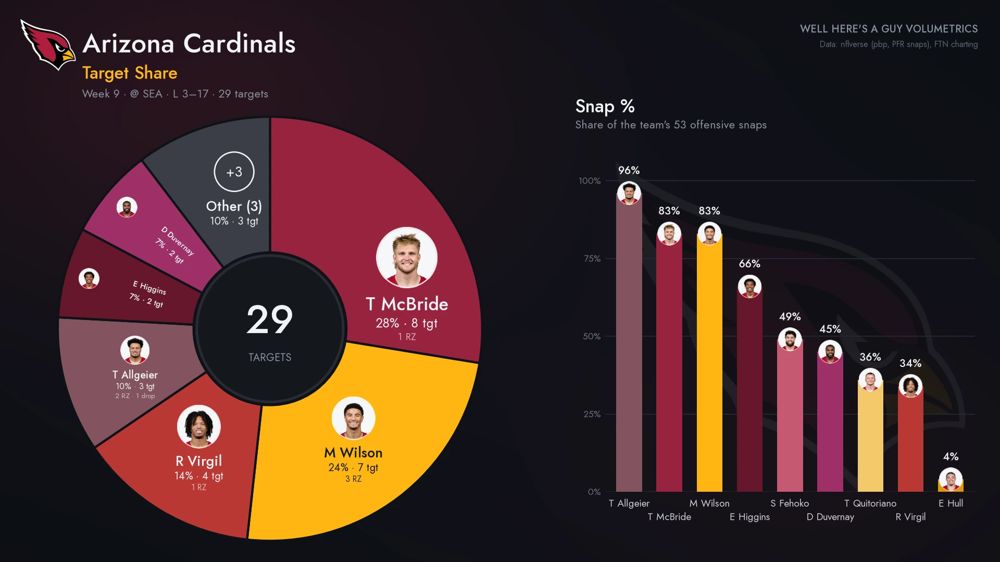
T McBride (28%) and M Wilson (24%) are a lot closer than most people think. And M Wilson had the bigger red-zone role (3 RZ to 1). M Wilson also got 3 of the team's 7 red-zone targets, and that's where touchdowns come from.
Why this take
- T McBride 27.6% vs M Wilson 24.1% (gap <= 4%)
- M Wilson: 3 of 7 team red-zone targets
Atlanta Falcons

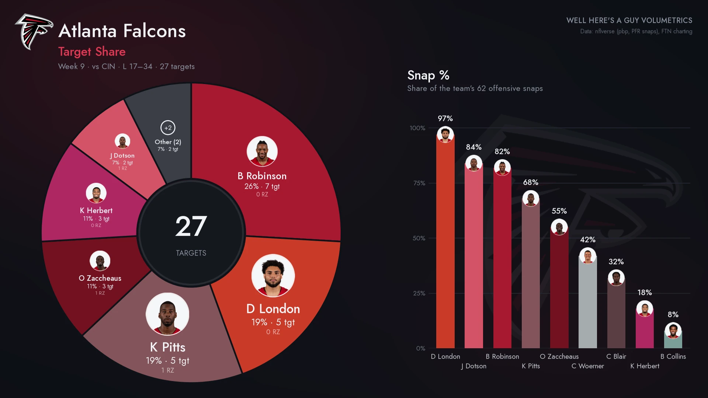
Don't panic on D London: 19% of the looks this week, but he was at 29% coming in and still played 97% of the snaps. I'd buy low. Notice J Dotson actually played 84% of the snaps but only got 2 targets. B Robinson had 7 targets out of the backfield (26%). That's real PPR value.
Why this take
- D London: 29% prior avg -> 19%; snaps 90% -> 97%
- J Dotson: 84% snaps but 2 targets (7%)
- B Robinson (RB): 26% target share
Baltimore Ravens

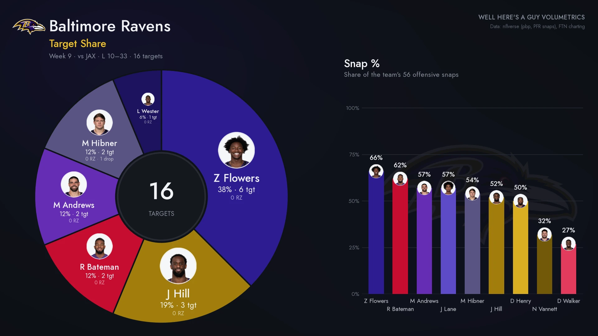
Z Flowers is the clear No. 1 here with 38% of the targets (6). No wide receiver played more than 66% of the snaps, so a rotation is capping everybody's ceiling. J Hill had 3 targets out of the backfield (19%). That's real PPR value.
Why this take
- Z Flowers: 37.5% target share (>= 28%)
- max WR snap share 66% (< 75%)
- J Hill (RB): 19% target share
Buffalo Bills

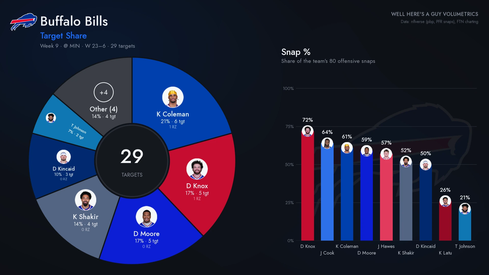
This passing offense is a mess: no receiver cleared 75% of the snaps and nobody got a real share of the targets (top guy was 21%). Hard to trust anyone here until something changes. D Moore pulled 17% of the targets on just 59% of the snaps. If that snap share climbs, he's a sneaky add.
Why this take
- top share 21% (< 25%), 5 players >= 10%, max WR snaps 61%
- D Moore: 17% target share on 59% snaps
Carolina Panthers

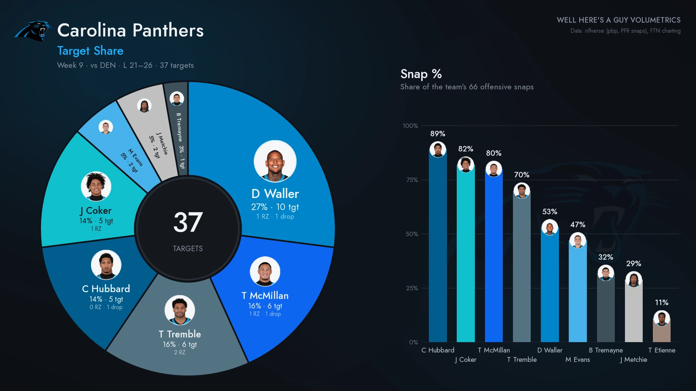
T McMillan only saw 16% of the targets after averaging 27%, even on 80% of the snaps. The role is still there. This is a buy-low window. D Waller pulled 27% of the targets on just 53% of the snaps. If that snap share climbs, he's a sneaky add. T Tremble got 2 of the team's 5 red-zone targets, and that's where touchdowns come from.
Why this take
- T McMillan: 27% prior avg -> 16%; snaps 83% -> 80%
- D Waller: 27% target share on 53% snaps
- T Tremble: 2 of 5 team red-zone targets
Chicago Bears

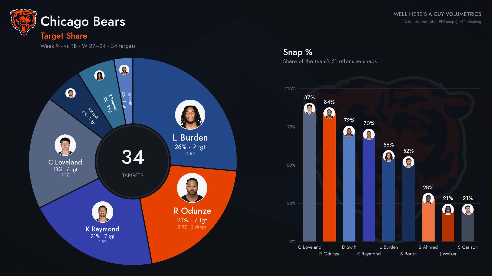
L Burden pulled 26% of the targets on just 56% of the snaps. If that snap share climbs, he's a sneaky add. R Odunze got 2 of the team's 4 red-zone targets, and that's where touchdowns come from. R Odunze did drop 2 balls, which is the kind of thing that costs you targets if it keeps up.
Why this take
- L Burden: 26% target share on 56% snaps
- R Odunze: 2 of 4 team red-zone targets
- R Odunze: 2 drops (FTN)
Cincinnati Bengals

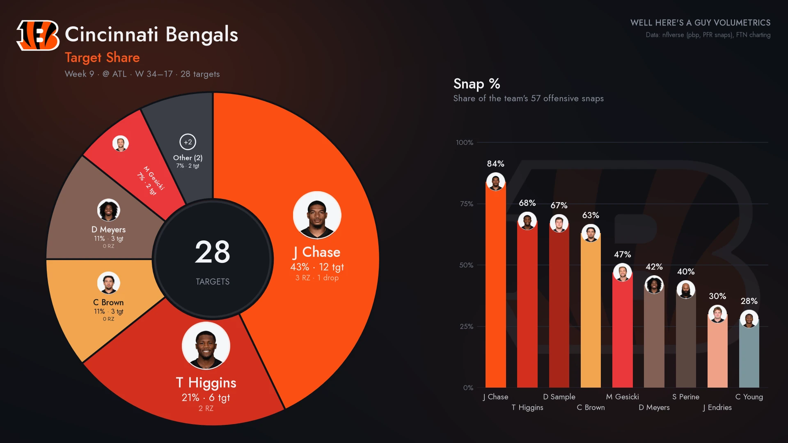
12 targets for J Chase. That's 43% of the pie, and it went for 10-155, 1 TD. Any time a guy gets over 40% of the looks, you expect a big day, and he delivered. J Chase also got 3 of the team's 5 red-zone targets, and that's where touchdowns come from.
Why this take
- J Chase: 12/28 = 42.9% target share (>= 40%)
- J Chase: 3 of 5 team red-zone targets
Cleveland Browns

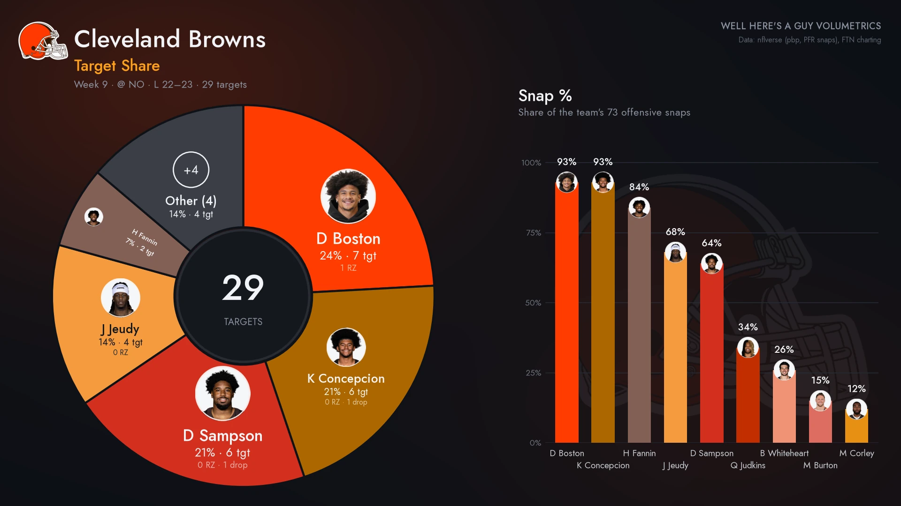
D Boston (24%) and K Concepcion (21%) are a lot closer than most people think. H Fannin only saw 7% of the targets after averaging 20%, even on 84% of the snaps. The role is still there. This is a buy-low window. A lot of targets spread around this week: 4 guys hit double-digit share and nobody topped 24%.
Why this take
- D Boston 24.1% vs K Concepcion 20.7% (gap <= 4%)
- H Fannin: 20% prior avg -> 7%; snaps 87% -> 84%
- top share 24% (< 25%), 4 players >= 10%
Dallas Cowboys

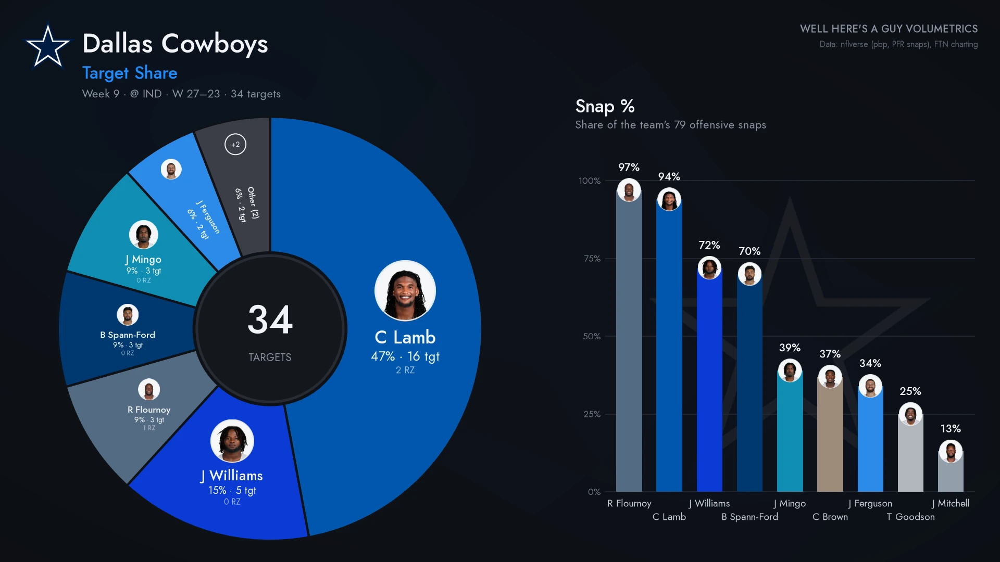
16 targets for C Lamb. That's 47% of the pie, and it went for 10-195, 1 TD. Any time a guy gets over 40% of the looks, you expect a big day, and he delivered. With G Pickens not taking an offensive snap, notice C Brown was out there for 37% of the snaps, up from 1%. The targets haven't caught up yet, but if G Pickens is out another week, he's a sneaky pickup. C Lamb also got 2 of the team's 5 red-zone targets, and that's where touchdowns come from. R Flournoy was on the field for 97% of the snaps and saw just 3 looks. The routes are there; the targets aren't.
Why this take
- C Lamb: 16/34 = 47.1% target share (>= 40%)
- G Pickens averaged 21% share before, 0 offensive snaps this week; C Brown share 0% -> 0%, snaps 1% -> 37%
- C Lamb: 2 of 5 team red-zone targets
- R Flournoy: 97% snaps but 3 targets (9%)
Denver Broncos

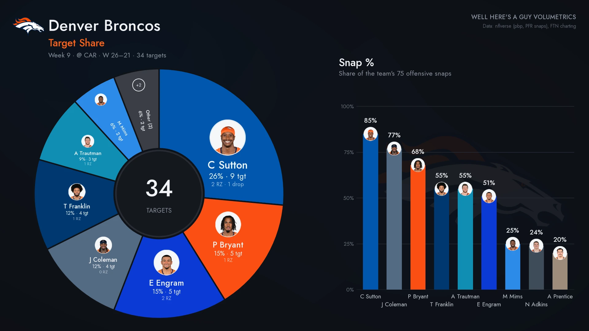
With R Harvey not taking an offensive snap, notice J Coleman was out there for 77% of the snaps, up from 40%. The targets haven't caught up yet, but if R Harvey is out another week, he's a sneaky pickup. J Waddle fell to 3% of the targets and only played 19% of the snaps after averaging 64%, so something kept him off the field. Check the injury report before reading anything into it.
Why this take
- R Harvey averaged 15% share before, 0 offensive snaps this week; J Coleman share 9% -> 12%, snaps 40% -> 77%
- J Waddle: 23% prior avg -> 3%; snaps 64% -> 19%
Detroit Lions

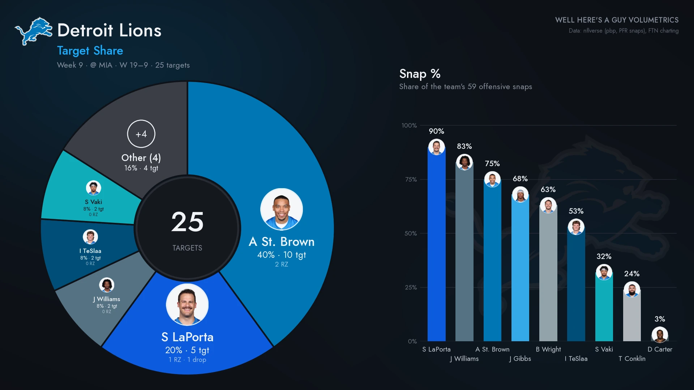
10 targets for A St. Brown, 40% of the team's looks, and only 8-86 to show for it. I don't care about the box score here; the volume is elite. Don't panic on J Williams: 8% of the looks this week, but he was at 18% coming in and still played 83% of the snaps. I'd buy low. A St. Brown also got 2 of the team's 5 red-zone targets, and that's where touchdowns come from. S LaPorta commanded 20% of the targets at tight end, and that's a weekly-starter role at the position.
Why this take
- A St. Brown: 10/25 = 40.0% target share (>= 40%)
- J Williams: 18% prior avg -> 8%; snaps 88% -> 83%
- A St. Brown: 2 of 5 team red-zone targets
- S LaPorta (TE): 20% target share
Green Bay Packers

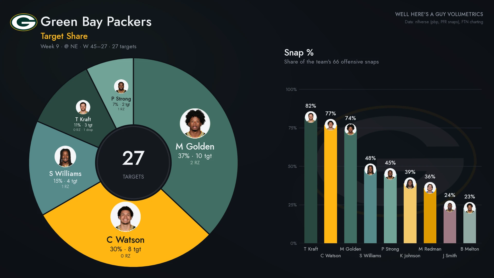
M Golden is the clear No. 1 here with 37% of the targets (10). M Golden also got 2 of the team's 4 red-zone targets, and that's where touchdowns come from.
Why this take
- M Golden: 37.0% target share (>= 28%)
- M Golden: 2 of 4 team red-zone targets
Houston Texans

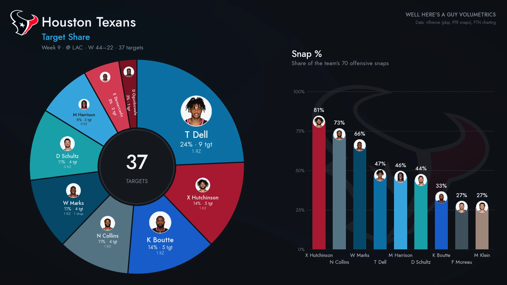
Don't panic on N Collins: 11% of the looks this week, but he was at 22% coming in and still played 73% of the snaps. I'd buy low. T Dell pulled 24% of the targets on just 47% of the snaps. If that snap share climbs, he's a sneaky add. A lot of targets spread around this week: 6 guys hit double-digit share and nobody topped 24%.
Why this take
- N Collins: 22% prior avg -> 11%; snaps 70% -> 73%
- T Dell: 24% target share on 47% snaps
- top share 24% (< 25%), 6 players >= 10%
Indianapolis Colts

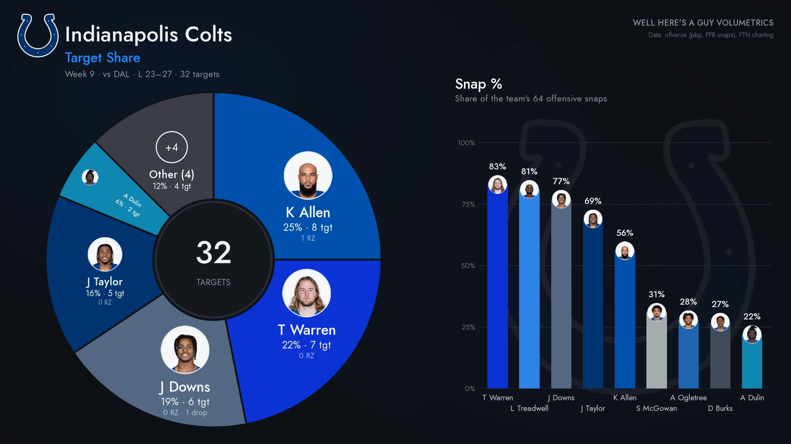
K Allen (25%) and T Warren (22%) are a lot closer than most people think. T Warren actually played more snaps (83% to 56%). L Treadwell was on the field for 81% of the snaps and saw just 1 look. The routes are there; the targets aren't. J Taylor had 5 targets out of the backfield (16%). That's real PPR value.
Why this take
- K Allen 25.0% vs T Warren 21.9% (gap <= 4%)
- L Treadwell: 81% snaps but 1 targets (3%)
- J Taylor (RB): 16% target share
Jacksonville Jaguars

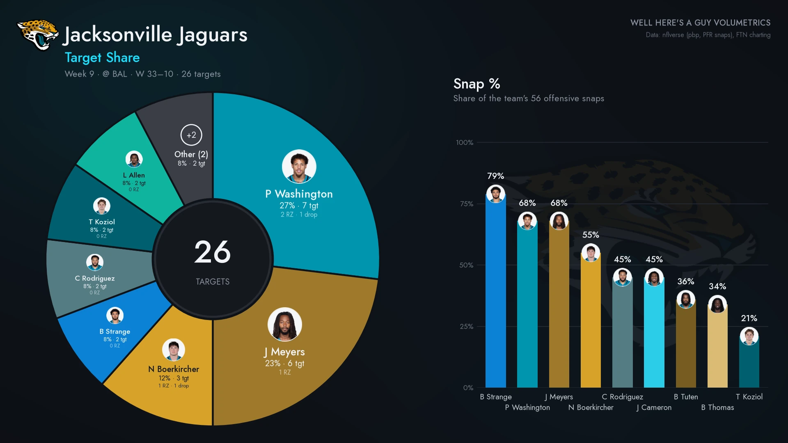
P Washington (27%) and J Meyers (23%) are a lot closer than most people think. P Washington also got 2 of the team's 4 red-zone targets, and that's where touchdowns come from. No wide receiver played more than 68% of the snaps, so a rotation is capping everybody's ceiling.
Why this take
- P Washington 26.9% vs J Meyers 23.1% (gap <= 4%)
- P Washington: 2 of 4 team red-zone targets
- max WR snap share 68% (< 75%)
Kansas City Chiefs

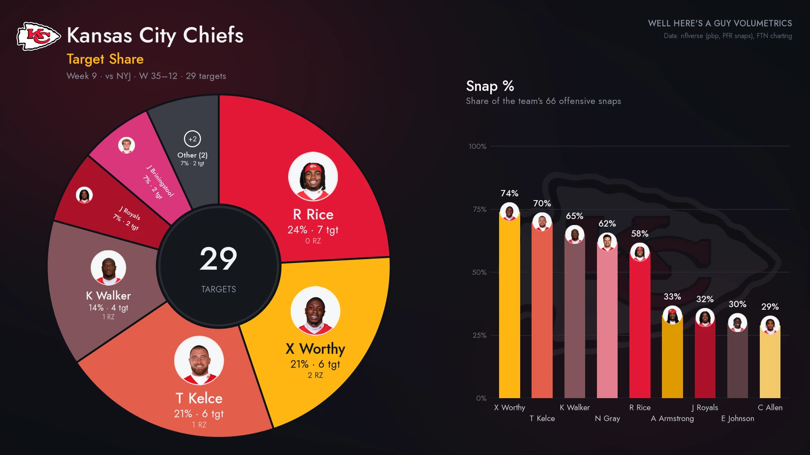
R Rice (24%) and X Worthy (21%) are a lot closer than most people think. X Worthy actually played more snaps (74% to 58%). This passing offense is a mess: no receiver cleared 75% of the snaps and nobody got a real share of the targets (top guy was 24%). Hard to trust anyone here until something changes. X Worthy also got 2 of the team's 5 red-zone targets, and that's where touchdowns come from. T Kelce commanded 21% of the targets at tight end, and that's a weekly-starter role at the position.
Why this take
- R Rice 24.1% vs X Worthy 20.7% (gap <= 4%)
- top share 24% (< 25%), 4 players >= 10%, max WR snaps 74%
- X Worthy: 2 of 5 team red-zone targets
- T Kelce (TE): 21% target share
Las Vegas Raiders

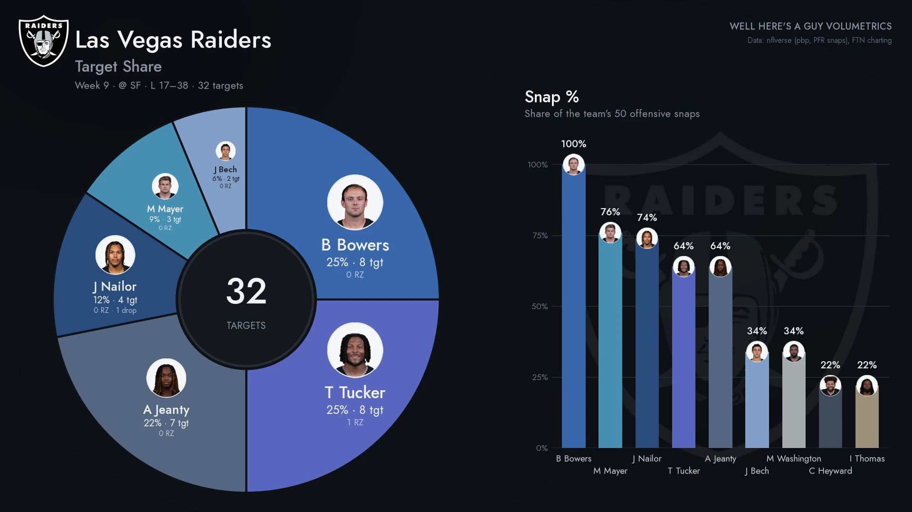
B Bowers (25%) and T Tucker (25%) are a lot closer than most people think. And T Tucker had the bigger red-zone role (1 RZ to 0). No wide receiver played more than 74% of the snaps, so a rotation is capping everybody's ceiling. A Jeanty had 7 targets out of the backfield (22%). That's real PPR value.
Why this take
- B Bowers 25.0% vs T Tucker 25.0% (gap <= 4%)
- max WR snap share 74% (< 75%)
- A Jeanty (RB): 22% target share
Los Angeles Chargers

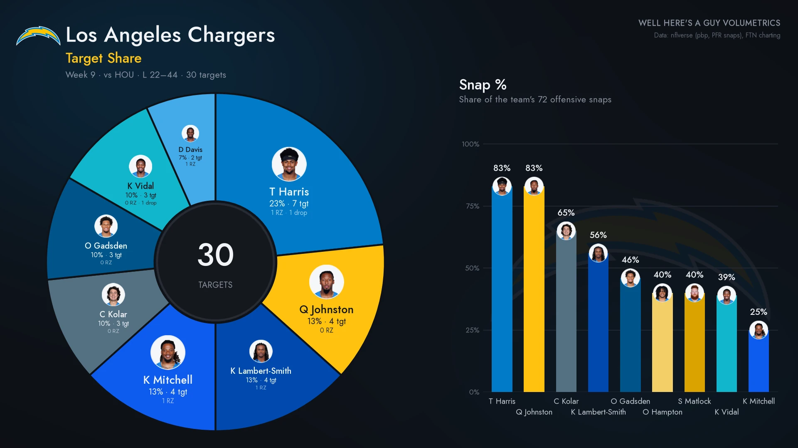
D Njoku didn't play a snap, and T Harris is the guy who soaked it up: 23% of the targets, up from 17%. Keep him in mind if D Njoku misses more time. A lot of targets spread around this week: 7 guys hit double-digit share and nobody topped 23%.
Why this take
- D Njoku averaged 15% share before, 0 offensive snaps this week; T Harris share 17% -> 23%, snaps 67% -> 83%
- top share 23% (< 25%), 7 players >= 10%
Los Angeles Rams

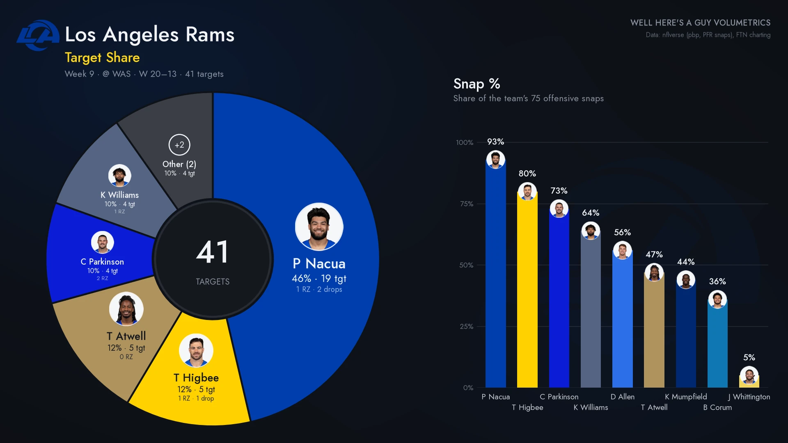
19 targets for P Nacua. That's 46% of the pie, and it went for 14-150, 1 TD. Any time a guy gets over 40% of the looks, you expect a big day, and he delivered. With D Adams not taking an offensive snap, notice T Higbee was out there for 80% of the snaps, up from 61%. The targets haven't caught up yet, but if D Adams is out another week, he's a sneaky pickup. P Nacua did drop 2 balls, which is the kind of thing that costs you targets if it keeps up.
Why this take
- P Nacua: 19/41 = 46.3% target share (>= 40%)
- D Adams averaged 21% share before, 0 offensive snaps this week; T Higbee share 10% -> 12%, snaps 61% -> 80%
- P Nacua: 2 drops (FTN)
Miami Dolphins

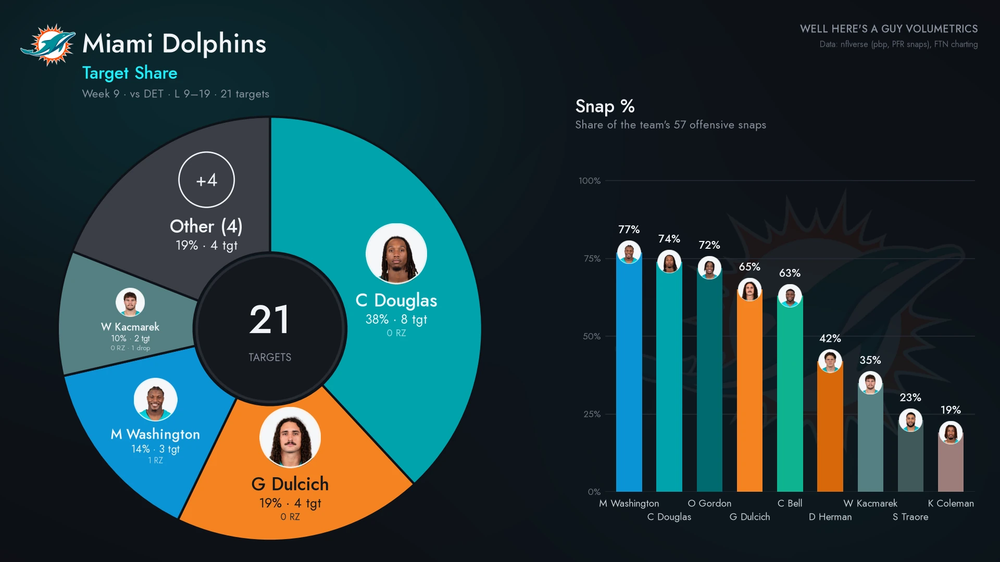
With D Achane not taking an offensive snap, notice O Gordon was out there for 72% of the snaps, up from 57%. The targets haven't caught up yet, but if D Achane is out another week, he's a sneaky pickup. This passing game runs through C Douglas: 8 targets, 38% of the share. Don't panic on M Washington: 14% of the looks this week, but he was at 25% coming in and still played 77% of the snaps. I'd buy low.
Why this take
- D Achane averaged 16% share before, 0 offensive snaps this week; O Gordon share 5% -> 5%, snaps 57% -> 72%
- C Douglas: 38.1% target share (>= 28%)
- M Washington: 25% prior avg -> 14%; snaps 83% -> 77%
Minnesota Vikings

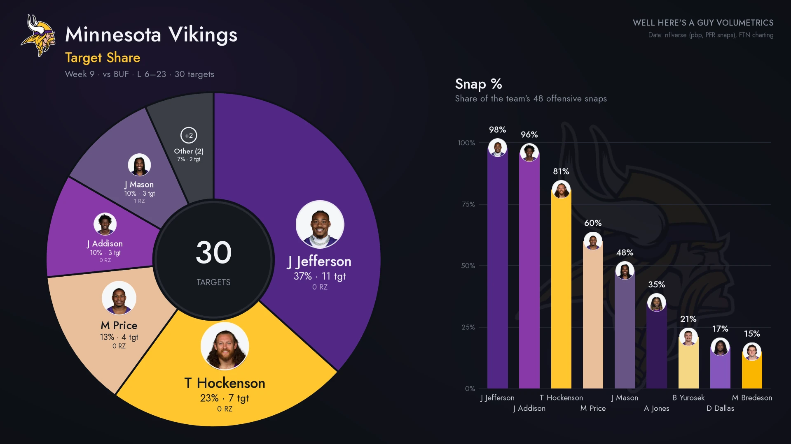
This passing game runs through J Jefferson: 11 targets, 37% of the share. Don't panic on J Addison: 10% of the looks this week, but he was at 22% coming in and still played 96% of the snaps. I'd buy low. T Hockenson commanded 23% of the targets at tight end, and that's a weekly-starter role at the position.
Why this take
- J Jefferson: 36.7% target share (>= 28%)
- J Addison: 22% prior avg -> 10%; snaps 91% -> 96%
- T Hockenson (TE): 23% target share
New England Patriots

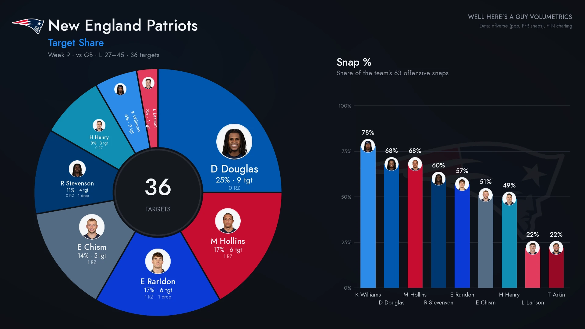
A Brown didn't play a snap, and D Douglas is the guy who soaked it up: 25% of the targets, up from 16%. Keep him in mind if A Brown misses more time.
Why this take
- A Brown averaged 22% share before, 0 offensive snaps this week; D Douglas share 16% -> 25%, snaps 56% -> 68%
New Orleans Saints

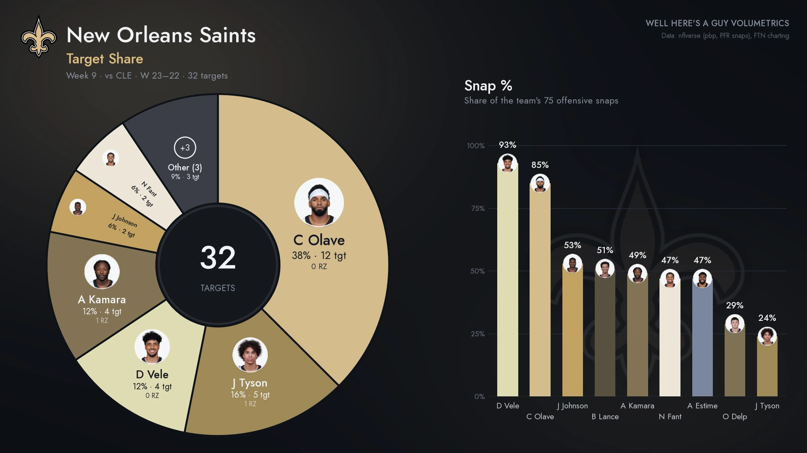
This passing game runs through C Olave: 12 targets, 38% of the share.
Why this take
- C Olave: 37.5% target share (>= 28%)
New York Giants

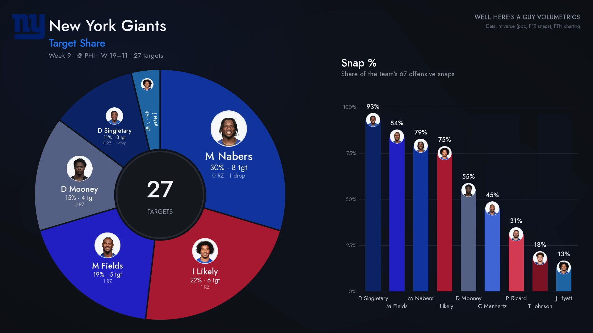
This passing game runs through M Nabers: 8 targets, 30% of the share. I Likely commanded 22% of the targets at tight end, and that's a weekly-starter role at the position.
Why this take
- M Nabers: 29.6% target share (>= 28%)
- I Likely (TE): 22% target share
New York Jets

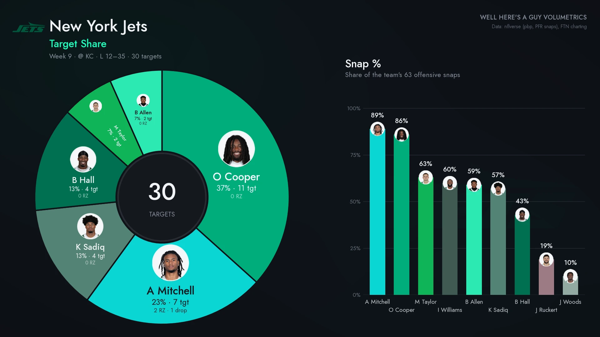
With G Wilson not taking an offensive snap, O Cooper jumped to 37% of the targets after averaging 11%. If G Wilson is out another week, O Cooper is a sneaky pickup. A Mitchell got both of the team's red-zone targets, and that's where touchdowns come from.
Why this take
- G Wilson averaged 28% share before, 0 offensive snaps this week; O Cooper share 11% -> 37%, snaps 58% -> 86%
- A Mitchell: 2 of 2 team red-zone targets
Philadelphia Eagles

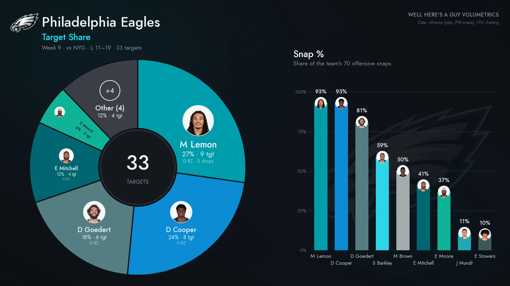
D Smith didn't play a snap, and D Cooper is the guy who soaked it up: 24% of the targets, up from 10%. Keep him in mind if D Smith misses more time. M Lemon did drop 2 balls, which is the kind of thing that costs you targets if it keeps up.
Why this take
- D Smith averaged 32% share before, 0 offensive snaps this week; D Cooper share 10% -> 24%, snaps 61% -> 93%
- M Lemon: 2 drops (FTN)
San Francisco 49ers

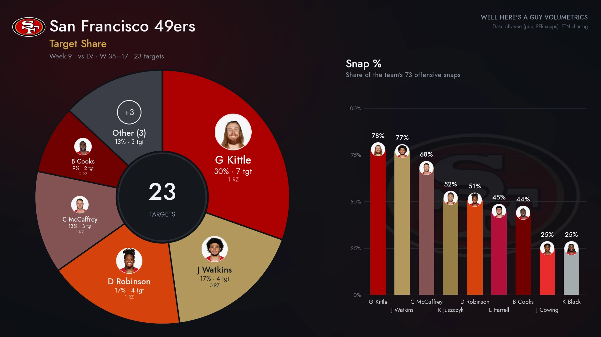
With M Evans not taking an offensive snap, J Watkins jumped to 17% of the targets after averaging 5%. If M Evans is out another week, J Watkins is a sneaky pickup. This passing game runs through G Kittle: 7 targets, 30% of the share. Notice D Robinson earned 4 targets while only playing 51% of the snaps. That's a guy getting open when he's out there.
Why this take
- M Evans averaged 23% share before, 0 offensive snaps this week; J Watkins share 5% -> 17%, snaps 51% -> 77%
- G Kittle: 30.4% target share (>= 28%)
- D Robinson: 17% target share on 51% snaps
Seattle Seahawks

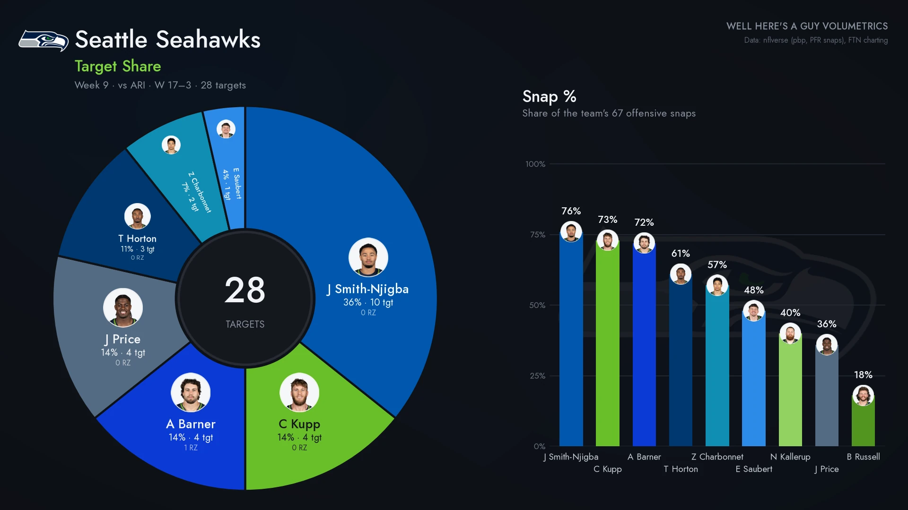
J Smith-Njigba is the clear No. 1 here with 36% of the targets (10).
Why this take
- J Smith-Njigba: 35.7% target share (>= 28%)
Tampa Bay Buccaneers

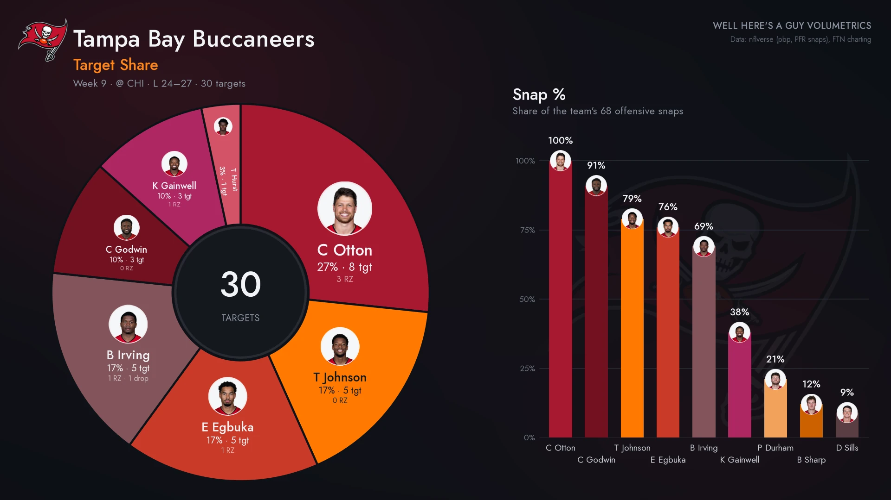
Don't panic on C Godwin: 10% of the looks this week, but he was at 22% coming in and still played 91% of the snaps. I'd buy low. C Otton got 3 of the team's 6 red-zone targets, and that's where touchdowns come from. B Irving had 5 targets out of the backfield (17%). That's real PPR value.
Why this take
- C Godwin: 22% prior avg -> 10%; snaps 82% -> 91%
- C Otton: 3 of 6 team red-zone targets
- B Irving (RB): 17% target share
Washington Commanders

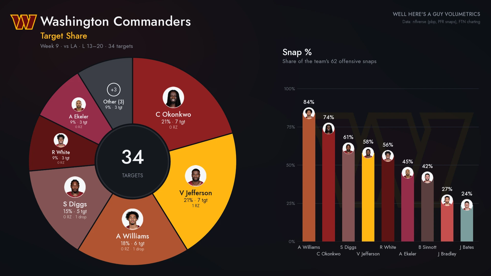
With T McLaurin not taking an offensive snap, V Jefferson jumped to 21% of the targets after averaging 2%. If T McLaurin is out another week, V Jefferson is a sneaky pickup. A lot of targets spread around this week: 4 guys hit double-digit share and nobody topped 21%. C Okonkwo commanded 21% of the targets at tight end, and that's a weekly-starter role at the position.
Why this take
- T McLaurin averaged 18% share before, 0 offensive snaps this week; V Jefferson share 2% -> 21%, snaps 8% -> 58%
- top share 21% (< 25%), 4 players >= 10%
- C Okonkwo (TE): 21% target share
Week 9 backfields
| Top 8 rushers | ||||||
|---|---|---|---|---|---|---|
| 31 | 107 | 79% | 64% | 2 | 17.1 | |
| 21 | 31 | 78% | 93% | 3 | 15.8 | |
| 20 | 101 | 62% | 72% | 5 | 22.0 | |
| 20 | 97 | 71% | 69% | 7 | 21.8 | |
| 20 | 74 | 80% | 68% | 3 | 14.4 | |
| 19 | 100 | 90% | 82% | 7 | 24.4 | |
| 18 | 68 | 50% | 68% | 5 | 22.0 | |
| 18 | 102 | 62% | 65% | 6 | 20.9 |
Tap a back to jump to his team, or a column to re-sort. HVT = catches plus carries inside the 10. xFP = the PPR points an average back would score on that workload.
League view

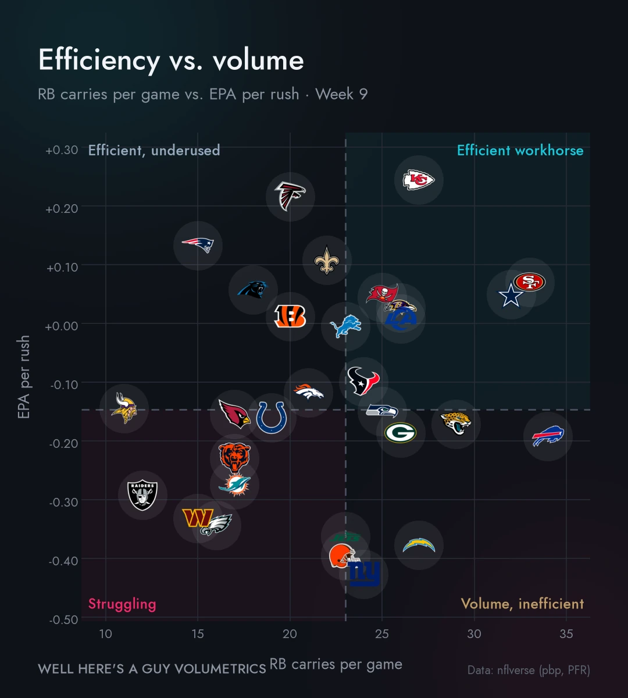

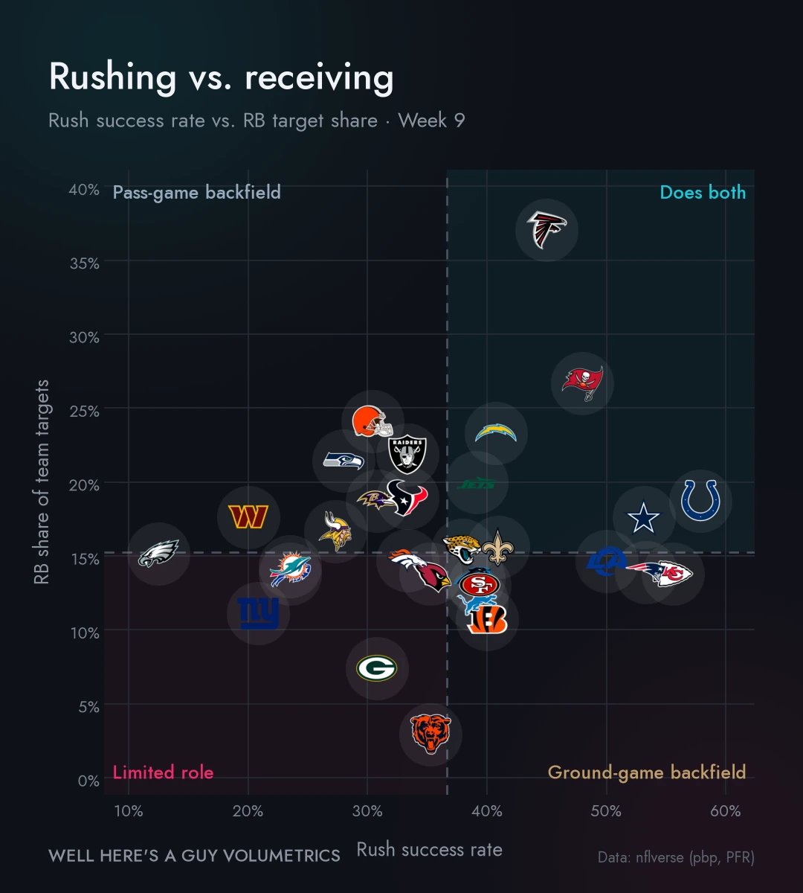

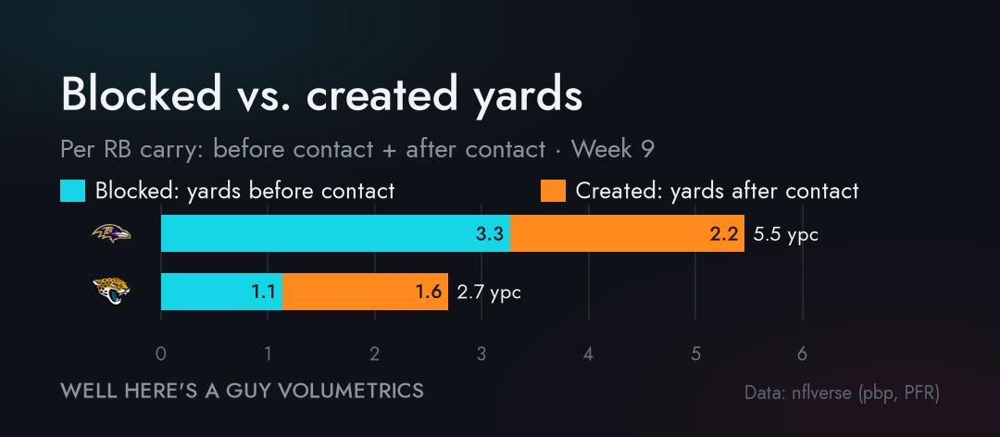

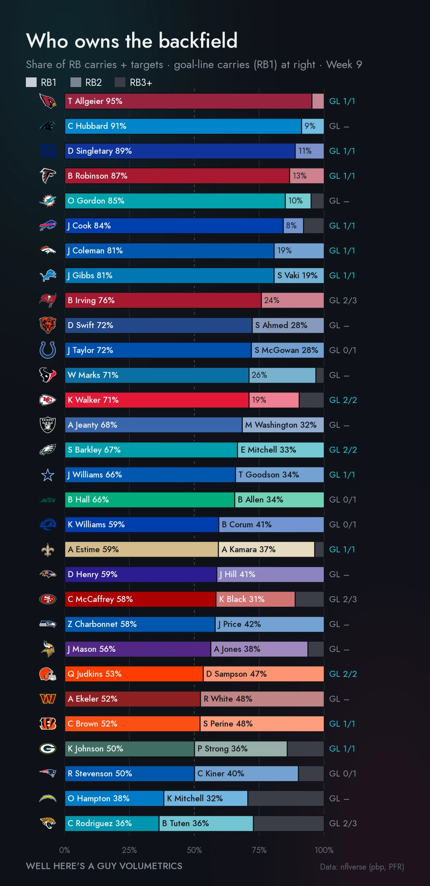
Team by team
Arizona Cardinals

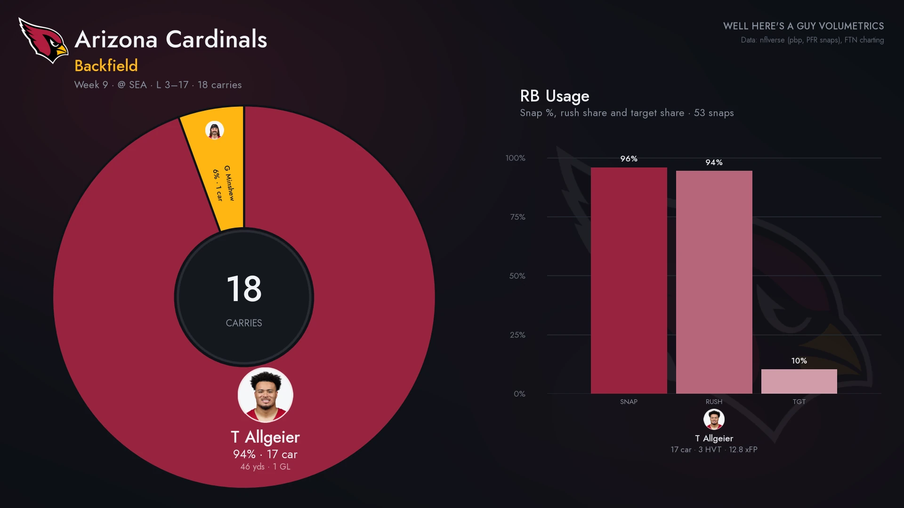
T Allgeier is a true workhorse: 96% of the snaps and 94% of the carries (17).
Why this take
- T Allgeier: 96% snaps, 94% rush share
Atlanta Falcons

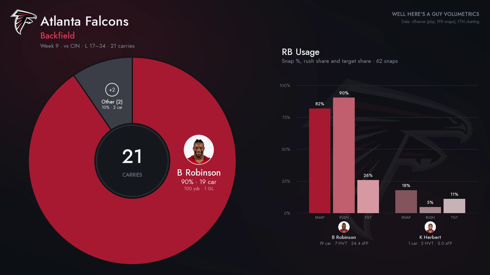
B Robinson is a true workhorse: 82% of the snaps and 90% of the carries (19). That's been his job all 4 games (80% of the carries). K Herbert is the passing-down back: 3 targets (11% of the team's) on 18% of the snaps. That's real value in PPR. B Robinson had 7 high-value touches (catches plus carries inside the 10). Those are the touches that score fantasy points.
Why this take
- B Robinson: 82% snaps, 90% rush share
- K Herbert: 11% target share, 5% rush share
- B Robinson: 7 high-value touches
Baltimore Ravens

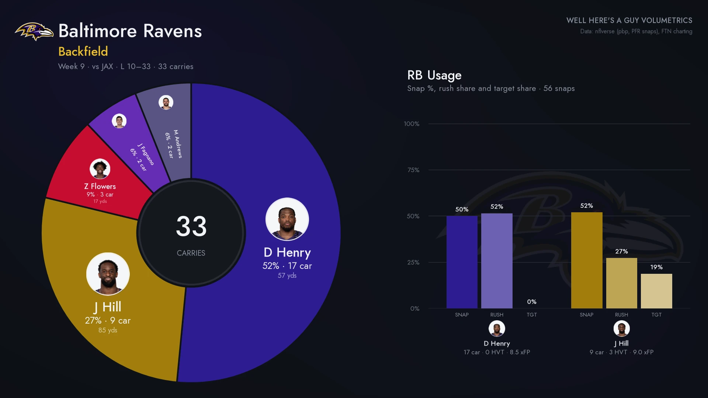
D Henry is the lead back (17 carries, 52%) but not a workhorse: he played 50% of the snaps and J Hill still got 9 carries. J Hill is the passing-down back: 3 targets (19% of the team's) on 52% of the snaps. That's real value in PPR.
Why this take
- D Henry: 52% rush share, 50% snaps
- J Hill: 19% target share, 27% rush share
Buffalo Bills

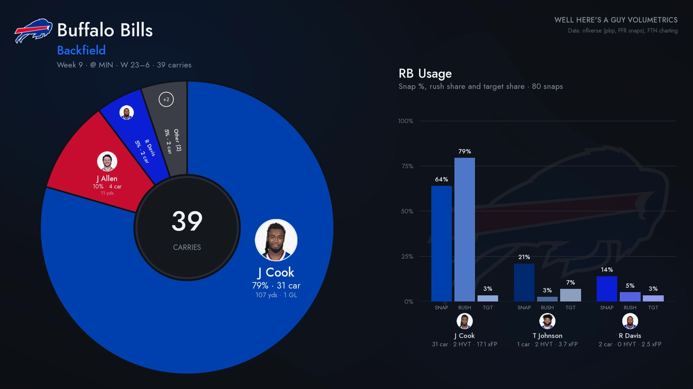
J Cook is the lead back (31 carries, 79%) but not a workhorse: he played 64% of the snaps.
Why this take
- J Cook: 79% rush share, 64% snaps
Carolina Panthers

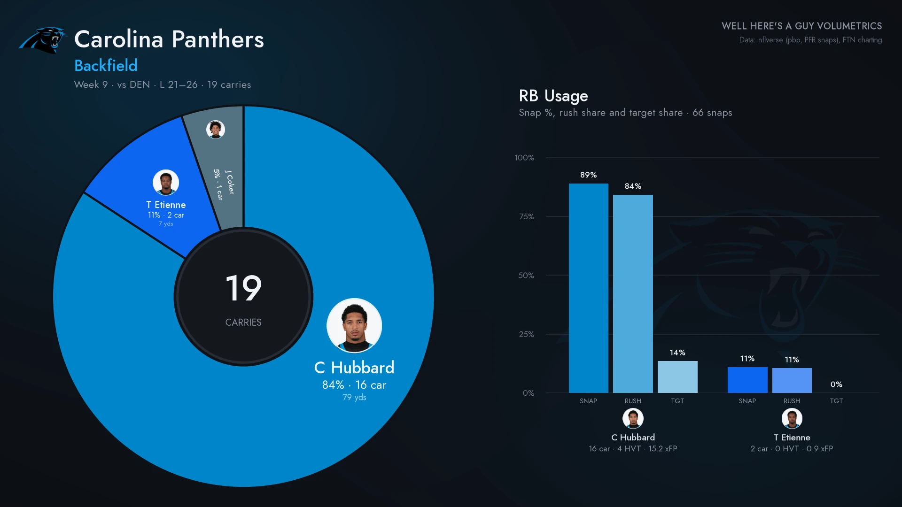
C Hubbard is a true workhorse: 89% of the snaps and 84% of the carries (16). That's been his job all 4 games (83% of the carries).
Why this take
- C Hubbard: 89% snaps, 84% rush share
Chicago Bears

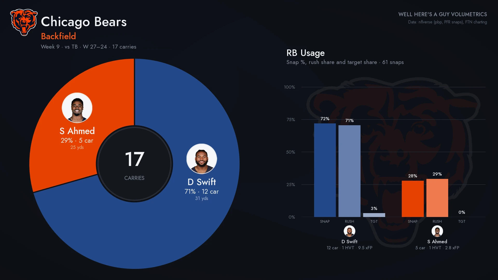
D Swift is a true workhorse: 72% of the snaps and 71% of the carries (12). That's been his job all 4 games (72% of the carries).
Why this take
- D Swift: 72% snaps, 71% rush share
Cincinnati Bengals

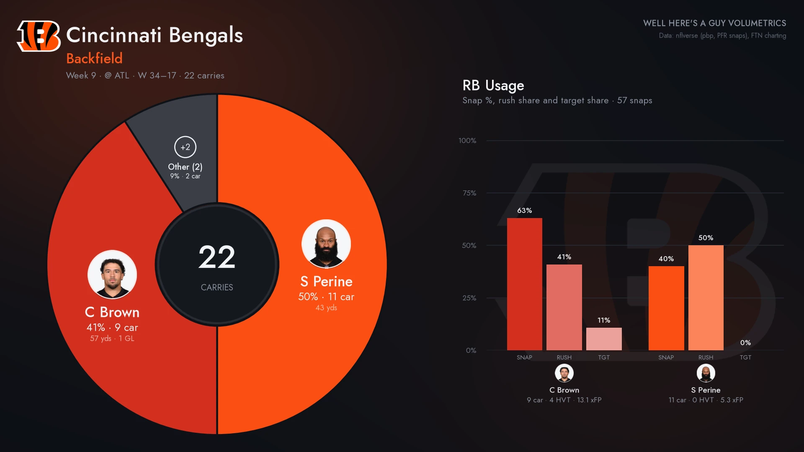
This is a committee: S Perine 50% of the carries, C Brown 41%. C Brown has the passing-down edge with 3 targets to 0. Hard to trust either as more than a flex.
Why this take
- S Perine 50% / C Brown 41% of carries
Cleveland Browns

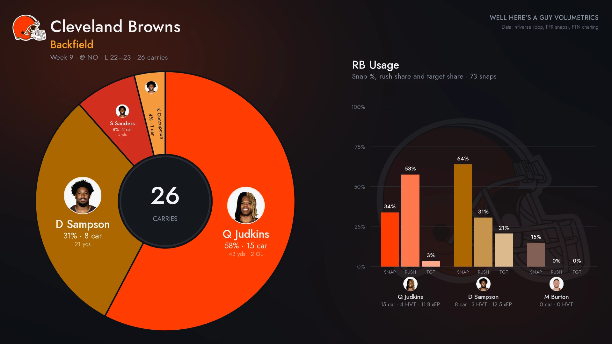
This is a committee: Q Judkins 58% of the carries, D Sampson 31%. D Sampson has the passing-down edge with 6 targets to 1. Hard to trust either as more than a flex. Q Judkins also got both of the team's carries inside the 5. That's the touchdown role.
Why this take
- Q Judkins 58% / D Sampson 31% of carries
- Q Judkins: 2 of 2 carries inside the 5
Dallas Cowboys

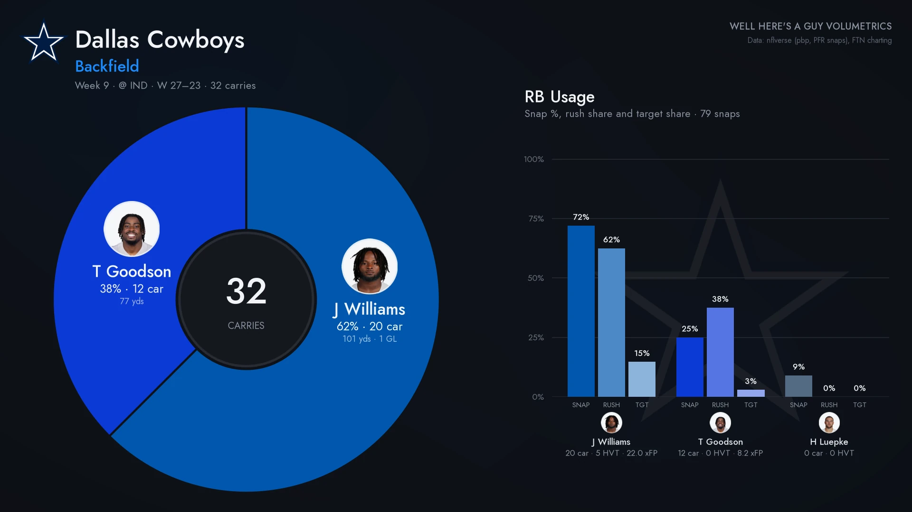
This is a committee: J Williams 62% of the carries, T Goodson 38%. J Williams has the passing-down edge with 5 targets to 1. Hard to trust either as more than a flex.
Why this take
- J Williams 62% / T Goodson 38% of carries
Denver Broncos

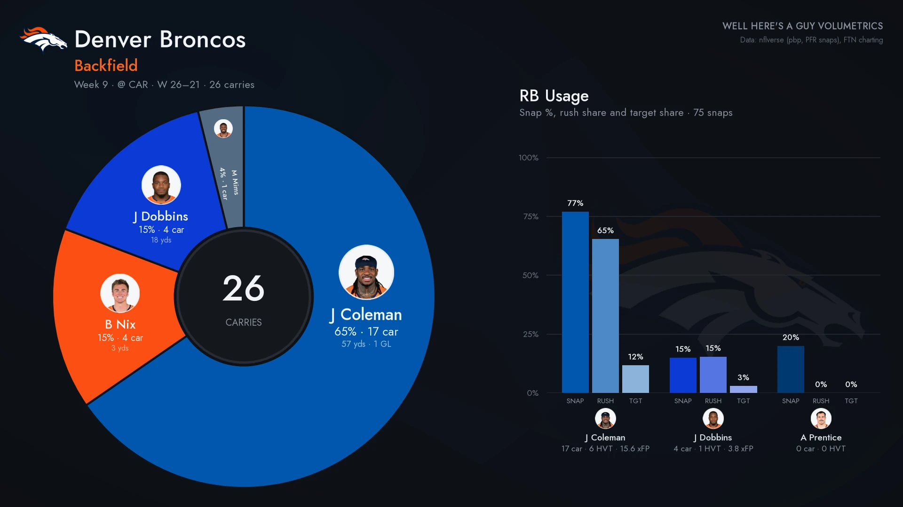
J Coleman is a true workhorse: 77% of the snaps and 65% of the carries (17). J Dobbins' grip on the backfield is slipping: 46% of the carries early in this stretch, 24% lately. J Coleman had 6 high-value touches (catches plus carries inside the 10). Those are the touches that score fantasy points.
Why this take
- J Coleman: 77% snaps, 65% rush share
- J Dobbins: rush share 46% -> 24% over 4
- J Coleman: 6 high-value touches
Detroit Lions

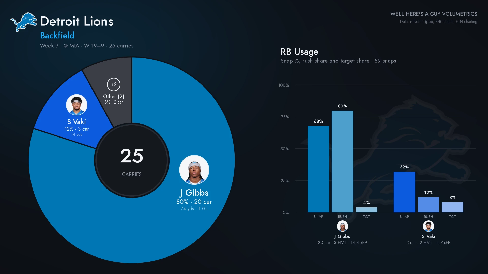
J Gibbs is the lead back (20 carries, 80%) but not a workhorse: he played 68% of the snaps and S Vaki still got 3 carries.
Why this take
- J Gibbs: 80% rush share, 68% snaps
Green Bay Packers

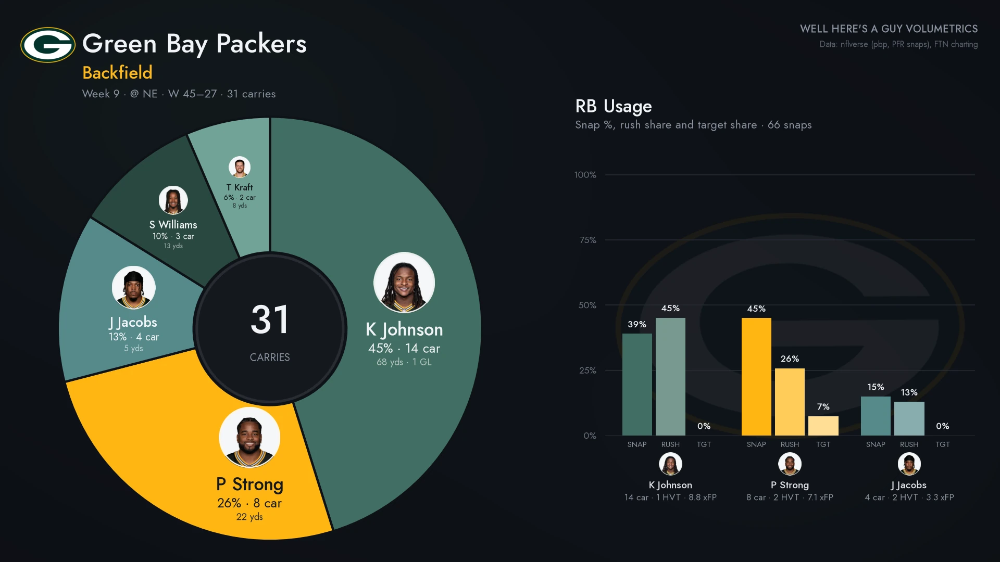
K Johnson led the backfield with 14 carries (45%), with P Strong next at 8 (26%). Notice J Jacobs' carries climbing: 29% of the rush share early in this stretch, 47% in the last two games.
Why this take
- top two by carries
- J Jacobs: rush share 29% -> 47% over 4
Houston Texans

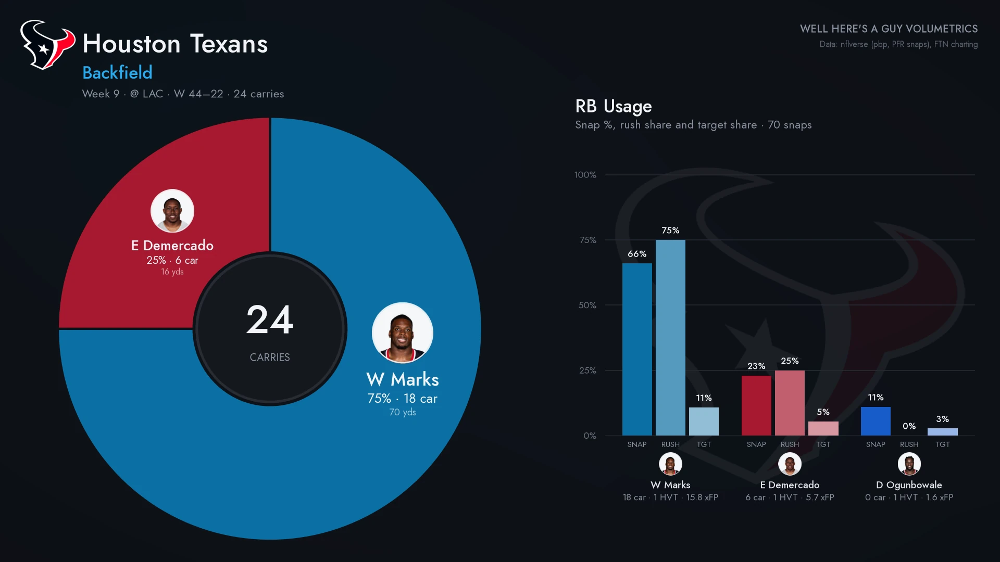
W Marks is the lead back (18 carries, 75%) but not a workhorse: he played 66% of the snaps and E Demercado still got 6 carries.
Why this take
- W Marks: 75% rush share, 66% snaps
Indianapolis Colts

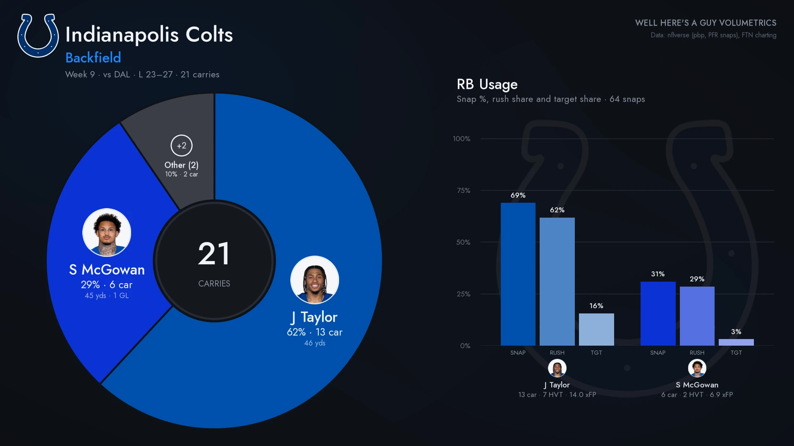
J Taylor is the lead back (13 carries, 62%) but not a workhorse: he played 69% of the snaps and S McGowan still got 6 carries. J Taylor had 7 high-value touches (catches plus carries inside the 10). Those are the touches that score fantasy points.
Why this take
- J Taylor: 62% rush share, 69% snaps
- J Taylor: 7 high-value touches
Jacksonville Jaguars

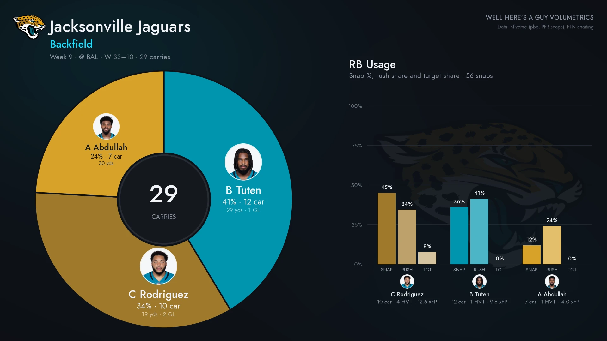
This is a committee: B Tuten 41% of the carries, C Rodriguez 34%. C Rodriguez has the passing-down edge with 2 targets to 0. Hard to trust either as more than a flex. C Rodriguez also got 2 of the team's 3 carries inside the 5. That's the touchdown role.
Why this take
- B Tuten 41% / C Rodriguez 34% of carries
- C Rodriguez: 2 of 3 carries inside the 5
Kansas City Chiefs

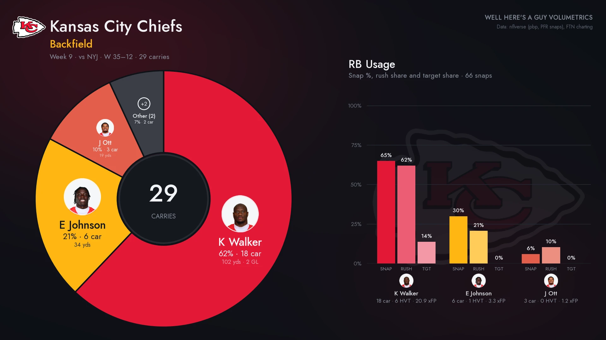
K Walker is the lead back (18 carries, 62%) but not a workhorse: he played 65% of the snaps and E Johnson still got 6 carries. K Walker also got 2 of the team's 3 carries inside the 5. That's the touchdown role.
Why this take
- K Walker: 62% rush share, 65% snaps
- K Walker: 2 of 3 carries inside the 5
Las Vegas Raiders

This is a committee: A Jeanty 40% of the carries, M Washington 40%. A Jeanty has the passing-down edge with 7 targets to 0. Hard to trust either as more than a flex. A Jeanty had 6 high-value touches (catches plus carries inside the 10). Those are the touches that score fantasy points.
Why this take
- A Jeanty 40% / M Washington 40% of carries
- A Jeanty: 6 high-value touches
Los Angeles Chargers

O Hampton led the backfield with 13 carries (45%), with K Vidal next at 7 (24%). K Mitchell is the passing-down back: 4 targets (13% of the team's) on 25% of the snaps. That's real value in PPR.
Why this take
- top two by carries
- K Mitchell: 13% target share, 24% rush share
Los Angeles Rams

This is a committee: K Williams 54% of the carries, B Corum 39%. K Williams has the passing-down edge with 4 targets to 2. Hard to trust either as more than a flex.
Why this take
- K Williams 54% / B Corum 39% of carries
Miami Dolphins

No committee here. O Gordon played 72% of the snaps and took 16 of 19 carries. That's been his job all 4 games (74% of the carries).
Why this take
- O Gordon: 72% snaps, 84% rush share
Minnesota Vikings

This is a committee: J Mason 50% of the carries, A Jones 42%. J Mason has the passing-down edge with 3 targets to 1. Hard to trust either as more than a flex.
Why this take
- J Mason 50% / A Jones 42% of carries
New England Patriots

This is a committee: C Kiner 53% of the carries, R Stevenson 40%. R Stevenson has the passing-down edge with 4 targets to 0. Hard to trust either as more than a flex.
Why this take
- C Kiner 53% / R Stevenson 40% of carries
New Orleans Saints

K Miller didn't play in Week 9 after taking 58% of the carries early in this stretch. A Estime took 58% of the carries in Week 9. If K Miller sits again, A Estime is the add. A Estime is the lead back (15 carries, 58%) but not a workhorse: he played 47% of the snaps and A Kamara still got 6 carries. A Kamara is the passing-down back: 4 targets (12% of the team's) on 49% of the snaps. That's real value in PPR.
Why this take
- K Miller: 58% rush share early, missed [9]
- A Estime: 58% rush share, 47% snaps
- A Kamara: 12% target share, 23% rush share
New York Giants

No committee here. D Singletary played 93% of the snaps and took 21 of 27 carries.
Why this take
- D Singletary: 93% snaps, 78% rush share
New York Jets

This is a committee: B Hall 62% of the carries, B Allen 33%. B Hall has the passing-down edge with 4 targets to 2. Hard to trust either as more than a flex.
Why this take
- B Hall 62% / B Allen 33% of carries
Philadelphia Eagles

D Pierce didn't play in Week 9 after taking 75% of the carries early in this stretch. S Barkley took 68% of the carries in Week 9. If D Pierce sits again, S Barkley is the add. S Barkley is the lead back (13 carries, 68%) but not a workhorse: he played 59% of the snaps and E Mitchell still got 3 carries. S Barkley also got 2 of the team's 3 carries inside the 5. That's the touchdown role. E Mitchell is the passing-down back: 4 targets (12% of the team's) on 41% of the snaps. That's real value in PPR.
Why this take
- D Pierce: 75% rush share early, missed [8, 9]
- S Barkley: 68% rush share, 59% snaps
- S Barkley: 2 of 3 carries inside the 5
- E Mitchell: 12% target share, 16% rush share
San Francisco 49ers

This is a committee: C McCaffrey 50% of the carries, K Black 31%. C McCaffrey has the passing-down edge with 3 targets to 0. Hard to trust either as more than a flex. C McCaffrey also got 2 of the team's 3 carries inside the 5. That's the touchdown role.
Why this take
- C McCaffrey 50% / K Black 31% of carries
- C McCaffrey: 2 of 3 carries inside the 5
Seattle Seahawks

E Wilson didn't play in Week 9 after taking 60% of the carries early in this stretch. Z Charbonnet took 55% of the carries in Week 9. If E Wilson sits again, Z Charbonnet is the add. This is a committee: Z Charbonnet 55% of the carries, J Price 31%. J Price has the passing-down edge with 4 targets to 2. Hard to trust either as more than a flex.
Why this take
- E Wilson: 60% rush share early, missed [8, 9]
- Z Charbonnet 55% / J Price 31% of carries
Tampa Bay Buccaneers

B Irving is the lead back (20 carries, 71%) but not a workhorse: he played 69% of the snaps and K Gainwell still got 5 carries. B Irving also got 2 of the team's 3 carries inside the 5. That's the touchdown role. K Gainwell is the passing-down back: 3 targets (10% of the team's) on 38% of the snaps. That's real value in PPR.
Why this take
- B Irving: 71% rush share, 69% snaps
- B Irving: 2 of 3 carries inside the 5
- K Gainwell: 10% target share, 18% rush share
Washington Commanders

This is a committee: A Ekeler 50% of the carries, R White 44%. Hard to trust either as more than a flex.
Why this take
- A Ekeler 50% / R White 44% of carries
Trends: each team's last 4 games
Top target shares, last 4 games
| C Lamb | 40% | |
| P Nacua | 38% | |
| A St. Brown | 36% | |
| J Smith-Njigba | 36% | |
| M Nabers | 35% |
Arizona Cardinals

| Target share | Wk 6 | Wk 7 | Wk 8 | Wk 9 | All |
|---|---|---|---|---|---|
| T McBride | 26% | 30% | 20% | 28% | 26% |
| M Wilson | 21% | 18% | 37% | 24% | 25% |
| K Bourne | 24% | 14% | 5% | – | 11% |
| T Allgeier | 6% | 7% | 12% | 10% | 9% |
| E Higgins | 9% | 7% | 10% | 7% | 8% |
T McBride is the clear No. 1 over the last 4 games: 38 targets, 26% of the share. M Wilson is trending the right way: 19% of the targets early in this stretch, 30% in the last two games. Get him before everyone notices. K Bourne didn't play in Week 9 after drawing 19% of the targets early in this stretch. If he's back, he should slide right back into that role, so watch his status.
Why this take
- T McBride: 25.7% share over 4 games
- M Wilson: 19% share in the first games of the window -> 30% in the latest
- K Bourne: share 19% -> 2%; snaps 56% -> 16%
Atlanta Falcons

| Target share | Wk 6 | Wk 7 | Wk 8 | Wk 9 | All |
|---|---|---|---|---|---|
| D London | 30% | 31% | 26% | 19% | 27% |
| K Pitts | 21% | 16% | 22% | 19% | 19% |
| B Robinson | 6% | 16% | 4% | 26% | 13% |
| J Dotson | 15% | 9% | 22% | 7% | 13% |
| O Zaccheaus | 12% | – | 9% | 11% | 8% |
D London is the clear No. 1 over the last 4 games: 31 targets, 27% of the share. B Robinson has 15 targets out of the backfield over the last 4. Steady PPR value. K Pitts is getting 19% of the looks at tight end over the last 4, and that's a weekly starter.
Why this take
- D London: 27.0% share over 4 games
- B Robinson (RB): 13% share over 4
- K Pitts (TE): 19% share over 4
Baltimore Ravens

| Target share | Wk 6 | Wk 7 | Wk 8 | Wk 9 | All |
|---|---|---|---|---|---|
| Z Flowers | 35% | 32% | 19% | 38% | 31% |
| J Hill | 10% | 12% | 31% | 19% | 17% |
| M Andrews | 10% | 12% | 15% | 12% | 12% |
| J Lane | 16% | 15% | 4% | 0% | 10% |
| R Bateman | 3% | 12% | 12% | 12% | 9% |
Z Flowers leads this team at 31% of the targets over the last 4, but it's swung anywhere from 19% to 38% week to week. Expect some boom and some bust. J Hill is trending the right way: 11% of the targets early in this stretch, 25% in the last two games. Get him before everyone notices. Notice R Bateman's snaps went from 52% to 69% over this stretch. The targets usually follow the snaps.
Why this take
- Z Flowers: 30.8% share over 4; weekly range 19%-38%
- J Hill: 11% share in the first games of the window -> 25% in the latest
- R Bateman: snaps 52% -> 69%
Buffalo Bills

| Target share | Wk 5 | Wk 6 | Wk 8 | Wk 9 | All |
|---|---|---|---|---|---|
| K Shakir | 17% | 20% | 18% | 14% | 17% |
| D Kincaid | 11% | 27% | 18% | 10% | 17% |
| K Coleman | 11% | 20% | 9% | 21% | 15% |
| D Moore | – | – | 21% | 17% | 11% |
| D Knox | 17% | 3% | 6% | 17% | 10% |
Notice D Moore's share climbing: 0% to 19% over the last 4 games. His snaps went from 0% to 62% too. That's a role that's growing. Nobody has more than 17% of the targets over the last 4 games. This target tree is flat, so it's hard to trust anyone week to week.
Why this take
- D Moore: 0% share in the first games of the window -> 19% in the latest
- top share over 4 games 17%
Carolina Panthers

| Target share | Wk 6 | Wk 7 | Wk 8 | Wk 9 | All |
|---|---|---|---|---|---|
| T McMillan | 26% | 21% | 31% | 16% | 24% |
| J Coker | 37% | 14% | 14% | 14% | 20% |
| C Hubbard | 6% | 17% | 23% | 14% | 15% |
| D Waller | 6% | 7% | 6% | 27% | 12% |
| T Tremble | 11% | 7% | 9% | 16% | 11% |
Notice D Waller's share climbing: 6% to 16% over the last 4 games. His snaps went from 46% to 57% too. That's a role that's growing. J Coker's share has slipped from 25% to 14%, but he's still playing 84% of the snaps. The role is there. This is a buy-low window. C Hubbard has 20 targets out of the backfield over the last 4. Steady PPR value.
Why this take
- D Waller: 6% share in the first games of the window -> 16% in the latest
- J Coker: share 25% -> 14%; snaps 70% -> 84%
- C Hubbard (RB): 15% share over 4
Chicago Bears

| Target share | Wk 6 | Wk 7 | Wk 8 | Wk 9 | All |
|---|---|---|---|---|---|
| C Loveland | 21% | 40% | 26% | 18% | 26% |
| L Burden | 24% | 13% | 26% | 26% | 23% |
| R Odunze | 12% | 17% | 18% | 21% | 17% |
| K Raymond | 6% | 7% | 9% | 21% | 11% |
| D Swift | 15% | 13% | 9% | 3% | 10% |
C Loveland leads this team at 26% of the targets over the last 4, but it's swung anywhere from 18% to 40% week to week. Expect some boom and some bust.
Why this take
- C Loveland: 26.0% share over 4; weekly range 18%-40%
Cincinnati Bengals

| Target share | Wk 5 | Wk 7 | Wk 8 | Wk 9 | All |
|---|---|---|---|---|---|
| J Chase | 32% | 25% | 34% | 43% | 34% |
| T Higgins | 13% | 25% | 23% | 21% | 21% |
| C Brown | 13% | 18% | 19% | 11% | 16% |
| M Gesicki | 6% | 4% | 13% | 7% | 8% |
| D Meyers | 6% | 7% | 6% | 11% | 7% |
45 targets for J Chase over the last 4, 34% of the pie, and at least 25% every single week. I'm riding this. C Brown has 21 targets out of the backfield over the last 4. Steady PPR value.
Why this take
- J Chase: 33.6% share over 4 games, never below 25%
- C Brown (RB): 16% share over 4
Cleveland Browns

| Target share | Wk 6 | Wk 7 | Wk 8 | Wk 9 | All |
|---|---|---|---|---|---|
| D Boston | 20% | 23% | 28% | 24% | 24% |
| H Fannin | 12% | 26% | 30% | 7% | 20% |
| K Concepcion | 24% | 29% | 10% | 21% | 20% |
| D Sampson | – | 9% | 20% | 21% | 13% |
| J Jeudy | 16% | 11% | 2% | 14% | 10% |
Notice D Sampson's share climbing: 4% to 20% over the last 4 games. His snaps went from 23% to 60% too. That's a role that's growing. D Boston (24%) and H Fannin (20%) are basically splitting the top role over the last 4 games. K Concepcion's share has slipped from 26% to 15%, but he's still playing 88% of the snaps. The role is there. This is a buy-low window. D Boston also has 5 of the team's 8 red-zone targets over the last 4. That's the touchdown role.
Why this take
- D Sampson: 4% share in the first games of the window -> 20% in the latest
- D Boston 24.0% vs H Fannin 20.2% over 4
- K Concepcion: share 26% -> 15%; snaps 80% -> 88%
- D Boston: 5 of 8 team RZ targets over 4
Dallas Cowboys

| Target share | Wk 6 | Wk 7 | Wk 8 | Wk 9 | All |
|---|---|---|---|---|---|
| C Lamb | 33% | 46% | 39% | 47% | 40% |
| G Pickens | 20% | 23% | 14% | – | 15% |
| R Flournoy | 17% | 15% | 14% | 9% | 14% |
| B Spann-Ford | 9% | 8% | 18% | 9% | 11% |
| J Williams | 4% | 0% | 7% | 15% | 6% |
C Lamb owns this offense: 40% of the targets over the last 4 games, and he hasn't dipped below 33% in any of them. That's as safe as it gets. G Pickens didn't play in Week 9 after drawing 22% of the targets early in this stretch. If he's back, he should slide right back into that role, so watch his status. Notice B Spann-Ford's snaps went from 50% to 79% over this stretch. The targets usually follow the snaps. C Lamb also has 12 of the team's 25 red-zone targets over the last 4. That's the touchdown role.
Why this take
- C Lamb: 40.1% share over 4 games, never below 33%
- G Pickens: share 22% -> 7%; snaps 74% -> 28%
- B Spann-Ford: snaps 50% -> 79%
- C Lamb: 12 of 25 team RZ targets over 4
Denver Broncos

| Target share | Wk 6 | Wk 7 | Wk 8 | Wk 9 | All |
|---|---|---|---|---|---|
| C Sutton | 12% | 20% | 14% | 26% | 19% |
| J Waddle | 29% | 28% | 21% | 3% | 19% |
| E Engram | 8% | 12% | 10% | 15% | 12% |
| J Coleman | – | 8% | 17% | 12% | 10% |
| M Mims | 17% | 8% | 10% | 6% | 10% |
J Waddle is heading the wrong way: 29% of the targets early in this stretch, 12% lately, and his snaps fell from 60% to 32%. That's a real role change. Notice J Coleman's snaps went from 24% to 72% over this stretch. The targets usually follow the snaps.
Why this take
- J Waddle: share 29% -> 12%; snaps 60% -> 32%
- J Coleman: snaps 24% -> 72%
Detroit Lions

| Target share | Wk 5 | Wk 7 | Wk 8 | Wk 9 | All |
|---|---|---|---|---|---|
| A St. Brown | 38% | 35% | 32% | 40% | 36% |
| J Williams | 14% | 29% | 24% | 8% | 19% |
| S LaPorta | 17% | 6% | 20% | 20% | 15% |
| J Gibbs | 21% | 19% | 16% | 4% | 15% |
| I TeSlaa | 7% | 6% | 0% | 8% | 5% |
A St. Brown owns this offense: 36% of the targets over the last 4 games, and he hasn't dipped below 32% in any of them. That's as safe as it gets. Notice S LaPorta's share climbing: 12% to 20% over the last 4 games. That's a role that's growing. J Gibbs' share has slipped from 20% to 10%, but he's still playing 72% of the snaps. The role is there. This is a buy-low window.
Why this take
- A St. Brown: 36.4% share over 4 games, never below 32%
- S LaPorta: 12% share in the first games of the window -> 20% in the latest
- J Gibbs: share 20% -> 10%; snaps 80% -> 72%
Green Bay Packers

| Target share | Wk 6 | Wk 7 | Wk 8 | Wk 9 | All |
|---|---|---|---|---|---|
| M Golden | 32% | 29% | 33% | 37% | 32% |
| C Watson | 20% | 19% | 26% | 30% | 23% |
| T Kraft | 20% | 14% | 15% | 11% | 16% |
| S Williams | 10% | 7% | 5% | 15% | 9% |
| J Jacobs | – | 17% | 15% | 0% | 9% |
M Golden owns this offense: 32% of the targets over the last 4 games, and he hasn't dipped below 29% in any of them. That's as safe as it gets. C Watson is trending the right way: 20% of the targets early in this stretch, 28% in the last two games. Get him before everyone notices. M Golden also has 7 of the team's 18 red-zone targets over the last 4. That's the touchdown role. Over the last 4 games, M Golden and C Watson have soaked up 55% of the targets. Nobody else here matters much for fantasy.
Why this take
- M Golden: 32.4% share over 4 games, never below 29%
- C Watson: 20% share in the first games of the window -> 28% in the latest
- M Golden: 7 of 18 team RZ targets over 4
- M Golden + C Watson = 55.4% of targets over 4
Houston Texans

| Target share | Wk 5 | Wk 6 | Wk 7 | Wk 9 | All |
|---|---|---|---|---|---|
| N Collins | 21% | 16% | 18% | 11% | 16% |
| D Schultz | 12% | 19% | 21% | 11% | 15% |
| X Hutchinson | 15% | 9% | 21% | 14% | 15% |
| K Boutte | 15% | 9% | 7% | 14% | 12% |
| W Marks | 12% | 9% | 4% | 11% | 9% |
Notice X Hutchinson's snaps went from 48% to 68% over this stretch. The targets usually follow the snaps. Nobody has more than 16% of the targets over the last 4 games. This target tree is flat, so it's hard to trust anyone week to week.
Why this take
- X Hutchinson: snaps 48% -> 68%
- top share over 4 games 16%
Indianapolis Colts

| Target share | Wk 6 | Wk 7 | Wk 8 | Wk 9 | All |
|---|---|---|---|---|---|
| K Allen | 29% | 14% | 23% | 25% | 24% |
| J Downs | 21% | 19% | 17% | 19% | 19% |
| J Taylor | 11% | 14% | 17% | 16% | 14% |
| T Warren | – | – | 33% | 22% | 14% |
| L Treadwell | 13% | 10% | 7% | 3% | 8% |
Notice T Warren's share climbing: 0% to 28% over the last 4 games. His snaps went from 0% to 77% too. That's a role that's growing. J Taylor has 17 targets out of the backfield over the last 4. Steady PPR value.
Why this take
- T Warren: 0% share in the first games of the window -> 28% in the latest
- J Taylor (RB): 14% share over 4
Jacksonville Jaguars

| Target share | Wk 5 | Wk 6 | Wk 8 | Wk 9 | All |
|---|---|---|---|---|---|
| P Washington | 24% | 27% | 12% | 27% | 24% |
| J Meyers | 8% | 24% | 18% | 23% | 18% |
| B Strange | 21% | 17% | 12% | 8% | 16% |
| B Tuten | 8% | 10% | 12% | 0% | 7% |
| N Boerkircher | 5% | 5% | 6% | 12% | 7% |
P Washington led the way with 29 targets (24%) over the last 4 games, with J Meyers next at 22 (18%). B Strange's share has slipped from 19% to 10%, but he's still playing 66% of the snaps. The role is there. This is a buy-low window.
Why this take
- top two by targets
- B Strange: share 19% -> 10%; snaps 78% -> 66%
Kansas City Chiefs

| Target share | Wk 6 | Wk 7 | Wk 8 | Wk 9 | All |
|---|---|---|---|---|---|
| T Kelce | 17% | 25% | 18% | 21% | 20% |
| X Worthy | 24% | 19% | 16% | 21% | 20% |
| K Walker | 10% | 16% | 13% | 14% | 13% |
| R Rice | – | – | 21% | 24% | 12% |
| E Johnson | 10% | 9% | 13% | 0% | 9% |
Notice R Rice's share climbing: 0% to 23% over the last 4 games. His snaps went from 0% to 57% too. That's a role that's growing. Nobody has more than 20% of the targets over the last 4 games. This target tree is flat, so it's hard to trust anyone week to week. K Walker has 17 targets out of the backfield over the last 4. Steady PPR value.
Why this take
- R Rice: 0% share in the first games of the window -> 23% in the latest
- top share over 4 games 20%
- K Walker (RB): 13% share over 4
Las Vegas Raiders

| Target share | Wk 6 | Wk 7 | Wk 8 | Wk 9 | All |
|---|---|---|---|---|---|
| B Bowers | 23% | 19% | 40% | 25% | 25% |
| T Tucker | 18% | 28% | 4% | 25% | 20% |
| A Jeanty | 15% | 19% | 16% | 22% | 18% |
| M Mayer | 23% | 7% | 24% | 9% | 15% |
| J Nailor | 10% | 12% | 16% | 12% | 12% |
B Bowers leads this team at 25% of the targets over the last 4, but it's swung anywhere from 19% to 40% week to week. Expect some boom and some bust. T Tucker is heading the wrong way: 23% of the targets early in this stretch, 14% lately, and his snaps fell from 76% to 59%. That's a real role change. A Jeanty has 25 targets out of the backfield over the last 4. Steady PPR value.
Why this take
- B Bowers: 25.2% share over 4; weekly range 19%-40%
- T Tucker: share 23% -> 14%; snaps 76% -> 59%
- A Jeanty (RB): 18% share over 4
Los Angeles Chargers

| Target share | Wk 5 | Wk 6 | Wk 8 | Wk 9 | All |
|---|---|---|---|---|---|
| C Kolar | 19% | 17% | 13% | 10% | 15% |
| O Gadsden | 5% | 14% | 17% | 10% | 12% |
| T Harris | 19% | – | 10% | 23% | 12% |
| K Lambert-Smith | – | 25% | 0% | 13% | 11% |
| K Mitchell | 19% | 3% | 10% | 13% | 10% |
Notice Q Johnston's snaps went from 41% to 82% over this stretch. The targets usually follow the snaps. Nobody has more than 15% of the targets over the last 4 games. This target tree is flat, so it's hard to trust anyone week to week.
Why this take
- Q Johnston: snaps 41% -> 82%
- top share over 4 games 15%
Los Angeles Rams

| Target share | Wk 6 | Wk 7 | Wk 8 | Wk 9 | All |
|---|---|---|---|---|---|
| P Nacua | 22% | 34% | 48% | 46% | 38% |
| C Parkinson | 19% | 21% | – | 10% | 13% |
| T Higbee | 12% | 10% | 8% | 12% | 11% |
| K Williams | 19% | 7% | 4% | 10% | 10% |
| K Mumpfield | 9% | 7% | 8% | 5% | 7% |
P Nacua owns this offense: 38% of the targets over the last 4 games, and he hasn't dipped below 22% in any of them. That's as safe as it gets. C Parkinson didn't play in Week 8 after drawing 20% of the targets early in this stretch. If he's back, he should slide right back into that role, so watch his status. Notice D Allen's snaps went from 50% to 65% over this stretch. The targets usually follow the snaps.
Why this take
- P Nacua: 37.8% share over 4 games, never below 22%
- C Parkinson: share 20% -> 5%; snaps 66% -> 36%
- D Allen: snaps 50% -> 65%
Miami Dolphins

| Target share | Wk 5 | Wk 7 | Wk 8 | Wk 9 | All |
|---|---|---|---|---|---|
| M Washington | 31% | 14% | 20% | 14% | 20% |
| G Dulcich | 19% | 24% | 20% | 19% | 20% |
| C Douglas | – | 14% | 20% | 38% | 17% |
| C Bell | 8% | 19% | 17% | 5% | 12% |
| K Coleman | 27% | 5% | 10% | 0% | 11% |
C Douglas is trending the right way: 7% of the targets early in this stretch, 29% in the last two games. His snaps went from 34% to 80% too. Get him before everyone notices. M Washington (20%) and G Dulcich (20%) are basically splitting the top role over the last 4 games. Nobody has more than 20% of the targets over the last 4 games. This target tree is flat, so it's hard to trust anyone week to week.
Why this take
- C Douglas: 7% share in the first games of the window -> 29% in the latest
- M Washington 20.4% vs G Dulcich 20.4% over 4
- top share over 4 games 20%
Minnesota Vikings

| Target share | Wk 5 | Wk 7 | Wk 8 | Wk 9 | All |
|---|---|---|---|---|---|
| J Jefferson | 24% | 29% | 32% | 37% | 31% |
| T Hockenson | 3% | 21% | 18% | 23% | 16% |
| J Addison | – | 12% | 29% | 10% | 13% |
| M Price | 14% | 0% | 0% | 13% | 7% |
| A Jones | 10% | 4% | 7% | 3% | 6% |
34 targets for J Jefferson over the last 4, 31% of the pie, and at least 24% every single week. I'm riding this. Notice T Hockenson's share climbing: 12% to 21% over the last 4 games. His snaps went from 40% to 82% too. That's a role that's growing. Notice J Addison's snaps went from 42% to 97% over this stretch. The targets usually follow the snaps.
Why this take
- J Jefferson: 30.6% share over 4 games, never below 24%
- T Hockenson: 12% share in the first games of the window -> 21% in the latest
- J Addison: snaps 42% -> 97%
New England Patriots

| Target share | Wk 6 | Wk 7 | Wk 8 | Wk 9 | All |
|---|---|---|---|---|---|
| D Douglas | 27% | 13% | 16% | 25% | 21% |
| H Henry | 17% | 23% | 16% | 8% | 16% |
| E Raridon | 10% | 13% | 21% | 17% | 15% |
| A Brown | 33% | 20% | – | – | 14% |
| R Stevenson | 0% | 17% | 16% | 11% | 10% |
E Chism is trending the right way: 3% of the targets early in this stretch, 20% in the last two games. Get him before everyone notices. A Brown didn't play in Week 8 and Week 9 after drawing 27% of the targets early in this stretch. If he's back, he should slide right back into that role, so watch his status. Notice E Raridon's snaps went from 55% to 74% over this stretch. The targets usually follow the snaps.
Why this take
- E Chism: 3% share in the first games of the window -> 20% in the latest
- A Brown: share 27% -> 0%; snaps 84% -> 0%
- E Raridon: snaps 55% -> 74%
New Orleans Saints

| Target share | Wk 5 | Wk 6 | Wk 7 | Wk 9 | All |
|---|---|---|---|---|---|
| C Olave | 25% | 23% | 26% | 38% | 28% |
| D Vele | 25% | 20% | 13% | 12% | 17% |
| A Kamara | 8% | 13% | 18% | 12% | 14% |
| J Johnson | 21% | 7% | 8% | 6% | 10% |
| B Lance | 12% | 13% | 5% | 3% | 8% |
C Olave owns this offense: 28% of the targets over the last 4 games, and he hasn't dipped below 23% in any of them. That's as safe as it gets. D Vele's share has slipped from 22% to 13%, but he's still playing 91% of the snaps. The role is there. This is a buy-low window. Notice B Lance's snaps went from 46% to 65% over this stretch. The targets usually follow the snaps.
Why this take
- C Olave: 28.2% share over 4 games, never below 23%
- D Vele: share 22% -> 13%; snaps 94% -> 91%
- B Lance: snaps 46% -> 65%
New York Giants

| Target share | Wk 5 | Wk 6 | Wk 7 | Wk 9 | All |
|---|---|---|---|---|---|
| M Nabers | 38% | 35% | 33% | 30% | 35% |
| I Likely | 25% | 26% | 15% | 22% | 23% |
| M Fields | 4% | 19% | 19% | 19% | 13% |
| D Mooney | 13% | 5% | 11% | 15% | 11% |
| D Singletary | – | 2% | 11% | 11% | 5% |
M Nabers owns this offense: 35% of the targets over the last 4 games, and he hasn't dipped below 30% in any of them. That's as safe as it gets. Notice D Singletary's snaps went from 20% to 61% over this stretch. The targets usually follow the snaps. M Nabers also has 5 of the team's 13 red-zone targets over the last 4. That's the touchdown role. Over the last 4 games, M Nabers and I Likely have soaked up 58% of the targets. Nobody else here matters much for fantasy.
Why this take
- M Nabers: 34.9% share over 4 games, never below 30%
- D Singletary: snaps 20% -> 61%
- M Nabers: 5 of 13 team RZ targets over 4
- M Nabers + I Likely = 57.7% of targets over 4
New York Jets

| Target share | Wk 6 | Wk 7 | Wk 8 | Wk 9 | All |
|---|---|---|---|---|---|
| O Cooper | 24% | 17% | 0% | 37% | 19% |
| G Wilson | 21% | 10% | 39% | – | 18% |
| M Taylor | 21% | 21% | 16% | 7% | 16% |
| A Mitchell | – | 10% | 29% | 23% | 16% |
| B Allen | 7% | 24% | 6% | 7% | 11% |
A Mitchell is trending the right way: 5% of the targets early in this stretch, 26% in the last two games. His snaps went from 22% to 75% too. Get him before everyone notices. M Taylor's share has slipped from 21% to 11%, but he's still playing 62% of the snaps. The role is there. This is a buy-low window. Nobody has more than 19% of the targets over the last 4 games. This target tree is flat, so it's hard to trust anyone week to week.
Why this take
- A Mitchell: 5% share in the first games of the window -> 26% in the latest
- M Taylor: share 21% -> 11%; snaps 59% -> 62%
- top share over 4 games 19%
Philadelphia Eagles

| Target share | Wk 6 | Wk 7 | Wk 8 | Wk 9 | All |
|---|---|---|---|---|---|
| M Lemon | 14% | 24% | 28% | 27% | 23% |
| D Goedert | 18% | 21% | 12% | 18% | 18% |
| D Cooper | 5% | 9% | 19% | 24% | 13% |
| E Mitchell | – | 12% | 19% | 12% | 10% |
| D Smith | 32% | – | – | – | 10% |
M Lemon is trending the right way: 19% of the targets early in this stretch, 28% in the last two games. Get him before everyone notices. Notice D Cooper's snaps went from 76% to 94% over this stretch. The targets usually follow the snaps.
Why this take
- M Lemon: 19% share in the first games of the window -> 28% in the latest
- D Cooper: snaps 76% -> 94%
Pittsburgh Steelers

| Target share | Wk 5 | Wk 6 | Wk 7 | Wk 8 | All |
|---|---|---|---|---|---|
| D Metcalf | 13% | 34% | 21% | 27% | 25% |
| G Bernard | 30% | 27% | 18% | 23% | 25% |
| J Warren | 20% | 9% | 14% | 9% | 13% |
| P Freiermuth | 23% | 7% | 14% | 9% | 13% |
| D Washington | 10% | 14% | 4% | 23% | 12% |
D Metcalf leads this team at 25% of the targets over the last 4, but it's swung anywhere from 13% to 34% week to week. Expect some boom and some bust. G Bernard's share has slipped from 29% to 20%, but he's still playing 88% of the snaps. The role is there. This is a buy-low window.
Why this take
- D Metcalf: 25.0% share over 4; weekly range 13%-34%
- G Bernard: share 29% -> 20%; snaps 93% -> 88%
San Francisco 49ers

| Target share | Wk 5 | Wk 6 | Wk 7 | Wk 9 | All |
|---|---|---|---|---|---|
| G Kittle | 22% | 28% | 26% | 30% | 26% |
| C McCaffrey | 11% | 34% | 18% | 13% | 19% |
| M Evans | 37% | 17% | – | – | 13% |
| J Watkins | 0% | 3% | 15% | 17% | 9% |
| B Cooks | 7% | 7% | 8% | 9% | 8% |
G Kittle is the clear No. 1 over the last 4 games: 31 targets, 26% of the share. Notice J Watkins' share climbing: 2% to 16% over the last 4 games. His snaps went from 56% to 76% too. That's a role that's growing. M Evans didn't play in Week 7 and Week 9 after drawing 27% of the targets early in this stretch. If he's back, he should slide right back into that role, so watch his status. G Kittle also has 7 of the team's 19 red-zone targets over the last 4. That's the touchdown role.
Why this take
- G Kittle: 26.3% share over 4 games
- J Watkins: 2% share in the first games of the window -> 16% in the latest
- M Evans: share 27% -> 0%; snaps 52% -> 0%
- G Kittle: 7 of 19 team RZ targets over 4
Seattle Seahawks

| Target share | Wk 6 | Wk 7 | Wk 8 | Wk 9 | All |
|---|---|---|---|---|---|
| J Smith-Njigba | 35% | 44% | 32% | 36% | 36% |
| C Kupp | 22% | 7% | 9% | 14% | 14% |
| A Barner | 9% | 19% | 15% | 14% | 13% |
| T Horton | 11% | 4% | 18% | 11% | 11% |
| R Shaheed | 17% | 11% | – | – | 8% |
49 targets for J Smith-Njigba over the last 4, 36% of the pie, and at least 32% every single week. I'm riding this. Notice T Horton's snaps went from 46% to 64% over this stretch. The targets usually follow the snaps.
Why this take
- J Smith-Njigba: 36.3% share over 4 games, never below 32%
- T Horton: snaps 46% -> 64%
Tampa Bay Buccaneers

| Target share | Wk 6 | Wk 7 | Wk 8 | Wk 9 | All |
|---|---|---|---|---|---|
| E Egbuka | 39% | – | – | 17% | 25% |
| C Godwin | 20% | 45% | 33% | 10% | 20% |
| C Otton | 5% | 9% | 0% | 27% | 13% |
| B Irving | 7% | 18% | 0% | 17% | 12% |
| T Johnson | 7% | 18% | 0% | 17% | 12% |
Notice K Gainwell's share climbing: 1% to 22% over the last 4 games. His snaps went from 22% to 44% too. That's a role that's growing. E Egbuka didn't play in Week 8 after drawing 20% of the targets early in this stretch. If he's back, he should slide right back into that role, so watch his status. Only about 21 targets a game over the last 4, which caps everyone's ceiling.
Why this take
- K Gainwell: 1% share in the first games of the window -> 22% in the latest
- E Egbuka: share 20% -> 8%; snaps 43% -> 38%
- 21.2 team targets per game over 4
Tennessee Titans

| Target share | Wk 5 | Wk 6 | Wk 7 | Wk 8 | All |
|---|---|---|---|---|---|
| W Robinson | 20% | 32% | 20% | 18% | 21% |
| C Tate | 14% | 32% | 23% | – | 15% |
| E Ayomanor | 6% | 9% | 23% | 13% | 13% |
| G Helm | 3% | 0% | 13% | 23% | 11% |
| T Pollard | 3% | 5% | 10% | 13% | 8% |
Notice E Ayomanor's share climbing: 7% to 18% over the last 4 games. His snaps went from 56% to 77% too. That's a role that's growing. C Tate didn't play in Week 8 after drawing 23% of the targets early in this stretch. If he's back, he should slide right back into that role, so watch his status. Notice T Pollard's snaps went from 62% to 78% over this stretch. The targets usually follow the snaps.
Why this take
- E Ayomanor: 7% share in the first games of the window -> 18% in the latest
- C Tate: share 23% -> 12%; snaps 75% -> 44%
- T Pollard: snaps 62% -> 78%
Washington Commanders

| Target share | Wk 5 | Wk 6 | Wk 8 | Wk 9 | All |
|---|---|---|---|---|---|
| C Okonkwo | 26% | 20% | 15% | 21% | 20% |
| A Williams | 13% | 11% | 26% | 18% | 17% |
| S Diggs | – | 20% | 22% | 15% | 15% |
| T Burks | 22% | 17% | 19% | – | 13% |
| R White | 4% | 14% | 11% | 9% | 10% |
A Williams is trending the right way: 12% of the targets early in this stretch, 22% in the last two games. His snaps went from 68% to 84% too. Get him before everyone notices. T Burks didn't play in Week 9 after drawing 19% of the targets early in this stretch. If he's back, he should slide right back into that role, so watch his status. Nobody has more than 20% of the targets over the last 4 games. This target tree is flat, so it's hard to trust anyone week to week.
Why this take
- A Williams: 12% share in the first games of the window -> 22% in the latest
- T Burks: share 19% -> 9%; snaps 64% -> 34%
- top share over 4 games 20%
| Top 8 rushers | ||||||
|---|---|---|---|---|---|---|
| 99 | 393 | 76% | 61% | 15 | 17.9 | |
| 97 | 494 | 77% | 76% | 22 | 24.7 | |
| 90 | 419 | 60% | 67% | 16 | 18.2 | |
| 80 | 353 | 68% | 71% | 16 | 18.2 | |
| T Pollard | 79 | 374 | 87% | 70% | 12 | 15.7 |
| 78 | 315 | 74% | 75% | 12 | 17.0 | |
| 77 | 222 | 72% | 73% | 22 | 20.1 | |
| 73 | 313 | 83% | 85% | 21 | 18.5 |
Carries and yards are totals over the span; xFP/g is per game played. Tap a back to jump to his team, or a column to re-sort. HVT = catches plus carries inside the 10. xFP = the PPR points an average back would score on that workload.
League view


Team by team
Arizona Cardinals

| Rush share | Wk 6 | Wk 7 | Wk 8 | Wk 9 | All |
|---|---|---|---|---|---|
| T Allgeier | 51% | 36% | 44% | 94% | 54% |
| B Knight | 43% | 32% | 12% | – | 25% |
| J Love | – | – | 36% | – | 9% |
T Allgeier is the lead back (54 carries, 54%) but not a workhorse: he played 62% of the snaps and B Knight still got 25 carries. T Allgeier also got 2 of the team's 6 carries inside the 5. That's the touchdown role.
Why this take
- T Allgeier: 54% rush share, 62% snaps
- T Allgeier: 2 of 6 carries inside the 5
Atlanta Falcons

| Rush share | Wk 6 | Wk 7 | Wk 8 | Wk 9 | All |
|---|---|---|---|---|---|
| B Robinson | 82% | 80% | 70% | 90% | 80% |
| K Herbert | – | 8% | 15% | 5% | 8% |
| B Robinson | 18% | – | – | – | 2% |
B Robinson is a true workhorse: 81% of the snaps and 80% of the carries (67). B Robinson had 14 high-value touches (catches plus carries inside the 10). Those are the touches that score fantasy points.
Why this take
- B Robinson: 81% snaps, 80% rush share
- B Robinson: 14 high-value touches
Baltimore Ravens

| Rush share | Wk 6 | Wk 7 | Wk 8 | Wk 9 | All |
|---|---|---|---|---|---|
| D Henry | 89% | 68% | 65% | 52% | 66% |
| J Hill | 0% | 12% | 18% | 27% | 16% |
| R Ali | – | 16% | 12% | – | 6% |
D Henry is the lead back (62 carries, 66%) but not a workhorse: he played 51% of the snaps and J Hill still got 15 carries. D Henry also got all 3 of the team's carries inside the 5. That's the touchdown role. J Hill is the passing-down back: 18 targets (17% of the team's) on 47% of the snaps. That's real value in PPR.
Why this take
- D Henry: 66% rush share, 51% snaps
- D Henry: 3 of 3 carries inside the 5
- J Hill: 17% target share, 16% rush share
Buffalo Bills

| Rush share | Wk 5 | Wk 6 | Wk 8 | Wk 9 | All |
|---|---|---|---|---|---|
| J Cook | 86% | 88% | 57% | 79% | 76% |
| T Johnson | 0% | 4% | 11% | 3% | 5% |
| R Davis | 7% | 4% | 16% | 5% | 8% |
J Cook is the lead back (99 carries, 76%) but not a workhorse: he played 61% of the snaps and R Davis still got 11 carries. J Cook also got 7 of the team's 12 carries inside the 5. That's the touchdown role. T Johnson is the passing-down back: 11 targets (10% of the team's) on 21% of the snaps. That's real value in PPR.
Why this take
- J Cook: 76% rush share, 61% snaps
- J Cook: 7 of 12 carries inside the 5
- T Johnson: 10% target share, 5% rush share
Carolina Panthers

| Rush share | Wk 6 | Wk 7 | Wk 8 | Wk 9 | All |
|---|---|---|---|---|---|
| C Hubbard | 93% | 44% | 96% | 84% | 83% |
| T Etienne | 3% | 38% | 4% | 11% | 11% |
| A Tyus | 0% | 19% | – | – | 3% |
C Hubbard is a true workhorse: 85% of the snaps and 83% of the carries (73). C Hubbard also got all 3 of the team's carries inside the 5. That's the touchdown role.
Why this take
- C Hubbard: 85% snaps, 83% rush share
- C Hubbard: 3 of 3 carries inside the 5
Chicago Bears

| Rush share | Wk 6 | Wk 7 | Wk 8 | Wk 9 | All |
|---|---|---|---|---|---|
| D Swift | 52% | 85% | 82% | 71% | 72% |
| R Johnson | 42% | 8% | 15% | – | 19% |
| S Ahmed | – | – | – | 29% | 5% |
D Swift is a true workhorse: 73% of the snaps and 72% of the carries (77). D Swift also got 9 of the team's 12 carries inside the 5. That's the touchdown role.
Why this take
- D Swift: 73% snaps, 72% rush share
- D Swift: 9 of 12 carries inside the 5
Cincinnati Bengals

| Rush share | Wk 5 | Wk 7 | Wk 8 | Wk 9 | All |
|---|---|---|---|---|---|
| C Brown | 46% | 58% | 71% | 41% | 52% |
| S Perine | 50% | 21% | 24% | 50% | 38% |
| T Brooks | – | 16% | – | – | 3% |
This is a committee: C Brown 52% of the carries, S Perine 38%. C Brown has the passing-down edge with 21 targets to 3. Hard to trust either as more than a flex. C Brown also got 2 of the team's 5 carries inside the 5. That's the touchdown role.
Why this take
- C Brown 52% / S Perine 38% of carries
- C Brown: 2 of 5 carries inside the 5
Cleveland Browns

| Rush share | Wk 6 | Wk 7 | Wk 8 | Wk 9 | All |
|---|---|---|---|---|---|
| Q Judkins | – | 61% | 85% | 58% | 48% |
| D Sampson | – | 21% | 8% | 31% | 17% |
| J McLaughlin | 39% | – | 0% | – | 10% |
| A Estime | 39% | – | – | – | 10% |
Q Judkins got 5 of the team's 6 carries inside the 5. That's the touchdown role. D Sampson is the passing-down back: 17 targets (13% of the team's) on 43% of the snaps. That's real value in PPR. D Sampson had 12 high-value touches (catches plus carries inside the 10). Those are the touches that score fantasy points.
Why this take
- Q Judkins: 5 of 6 carries inside the 5
- D Sampson: 13% target share, 17% rush share
- D Sampson: 12 high-value touches
Dallas Cowboys

| Rush share | Wk 6 | Wk 7 | Wk 8 | Wk 9 | All |
|---|---|---|---|---|---|
| J Williams | 79% | 68% | 71% | 62% | 68% |
| T Goodson | 14% | 27% | 21% | 38% | 26% |
| H Luepke | 0% | 3% | 0% | 0% | 1% |
No committee here. J Williams played 71% of the snaps and took 80 of 117 carries. J Williams also got all 8 of the team's carries inside the 5. That's the touchdown role.
Why this take
- J Williams: 71% snaps, 68% rush share
- J Williams: 8 of 8 carries inside the 5
Denver Broncos

| Rush share | Wk 6 | Wk 7 | Wk 8 | Wk 9 | All |
|---|---|---|---|---|---|
| J Coleman | – | 41% | 52% | 65% | 39% |
| J Dobbins | 65% | 27% | 33% | 15% | 36% |
| R Harvey | 23% | 14% | – | – | 9% |
This is a committee: J Coleman 39% of the carries, J Dobbins 36%. J Coleman has the passing-down edge with 11 targets to 4. Hard to trust either as more than a flex. J Coleman also got 5 of the team's 10 carries inside the 5. That's the touchdown role.
Why this take
- J Coleman 39% / J Dobbins 36% of carries
- J Coleman: 5 of 10 carries inside the 5
Detroit Lions

| Rush share | Wk 5 | Wk 7 | Wk 8 | Wk 9 | All |
|---|---|---|---|---|---|
| J Gibbs | 78% | 91% | 62% | 80% | 77% |
| S Vaki | 19% | 3% | 30% | 12% | 17% |
J Gibbs is a true workhorse: 76% of the snaps and 77% of the carries (97). J Gibbs also got 7 of the team's 8 carries inside the 5. That's the touchdown role.
Why this take
- J Gibbs: 76% snaps, 77% rush share
- J Gibbs: 7 of 8 carries inside the 5
Green Bay Packers

| Rush share | Wk 6 | Wk 7 | Wk 8 | Wk 9 | All |
|---|---|---|---|---|---|
| J Jacobs | – | 58% | 81% | 13% | 36% |
| P Strong | 46% | 0% | 4% | 26% | 20% |
| M Lloyd | 33% | 32% | 12% | – | 17% |
| K Johnson | 4% | – | – | 45% | 15% |
J Jacobs got 3 of the team's 6 carries inside the 5. That's the touchdown role. J Jacobs had 18 high-value touches (catches plus carries inside the 10). Those are the touches that score fantasy points. K Johnson had 15 touches but only 1 high-value ones. That's empty volume, so he needs long runs to pay off.
Why this take
- J Jacobs: 3 of 6 carries inside the 5
- J Jacobs: 18 high-value touches
- K Johnson: 15 touches, 1 high-value
Houston Texans

| Rush share | Wk 5 | Wk 6 | Wk 7 | Wk 9 | All |
|---|---|---|---|---|---|
| W Marks | 60% | 62% | 79% | 75% | 69% |
| E Demercado | – | – | – | 25% | 6% |
| J Jordan | – | 25% | – | – | 6% |
| D Montgomery | 20% | – | – | – | 5% |
No committee here. W Marks played 79% of the snaps and took 67 of 97 carries. W Marks also got 2 of the team's 3 carries inside the 5. That's the touchdown role.
Why this take
- W Marks: 79% snaps, 69% rush share
- W Marks: 2 of 3 carries inside the 5
Indianapolis Colts

| Rush share | Wk 6 | Wk 7 | Wk 8 | Wk 9 | All |
|---|---|---|---|---|---|
| J Taylor | 78% | 56% | 38% | 62% | 59% |
| S McGowan | 15% | 34% | 24% | 29% | 26% |
| D Giddens | – | – | 29% | – | 6% |
J Taylor is the lead back (60 carries, 59%) but not a workhorse: he played 70% of the snaps and S McGowan still got 26 carries. J Taylor also got 4 of the team's 5 carries inside the 5. That's the touchdown role.
Why this take
- J Taylor: 59% rush share, 70% snaps
- J Taylor: 4 of 5 carries inside the 5
Jacksonville Jaguars

| Rush share | Wk 5 | Wk 6 | Wk 8 | Wk 9 | All |
|---|---|---|---|---|---|
| B Tuten | 92% | 50% | 52% | 41% | 57% |
| C Rodriguez | 8% | 46% | 19% | 34% | 27% |
| A Abdullah | 0% | – | 19% | 24% | 12% |
| L Allen | 0% | 4% | 0% | 0% | 1% |
B Tuten is the lead back (62 carries, 57%) but not a workhorse: he played 54% of the snaps and C Rodriguez still got 29 carries. C Rodriguez got 4 of the team's 6 carries inside the 5. That's the touchdown role. B Tuten had 12 high-value touches (catches plus carries inside the 10). Those are the touches that score fantasy points.
Why this take
- B Tuten: 57% rush share, 54% snaps
- C Rodriguez: 4 of 6 carries inside the 5
- B Tuten: 12 high-value touches
Kansas City Chiefs

| Rush share | Wk 6 | Wk 7 | Wk 8 | Wk 9 | All |
|---|---|---|---|---|---|
| K Walker | 83% | 100% | 91% | 62% | 81% |
| E Johnson | 13% | 0% | 4% | 21% | 11% |
| J Ott | – | – | – | 10% | 3% |
No committee here. K Walker played 73% of the snaps and took 72 of 89 carries. K Walker also got 7 of the team's 8 carries inside the 5. That's the touchdown role.
Why this take
- K Walker: 73% snaps, 81% rush share
- K Walker: 7 of 8 carries inside the 5
Las Vegas Raiders

| Rush share | Wk 6 | Wk 7 | Wk 8 | Wk 9 | All |
|---|---|---|---|---|---|
| A Jeanty | 50% | 53% | 6% | 40% | 32% |
| M Washington | 45% | 40% | 81% | 40% | 57% |
| C Heyward | 0% | 0% | 3% | 0% | 1% |
| D Laube | 5% | – | 0% | 0% | 1% |
This is a committee: M Washington 57% of the carries, A Jeanty 32%. A Jeanty has the passing-down edge with 25 targets to 2. Hard to trust either as more than a flex. M Washington also got 7 of the team's 12 carries inside the 5. That's the touchdown role.
Why this take
- M Washington 57% / A Jeanty 32% of carries
- M Washington: 7 of 12 carries inside the 5
Los Angeles Chargers

| Rush share | Wk 5 | Wk 6 | Wk 8 | Wk 9 | All |
|---|---|---|---|---|---|
| O Hampton | 45% | 37% | 41% | 45% | 43% |
| K Vidal | 26% | 37% | 36% | 24% | 30% |
| K Mitchell | 19% | 11% | 18% | 24% | 19% |
K Mitchell is the passing-down back: 12 targets (10% of the team's) on 29% of the snaps. That's real value in PPR. O Hampton had 10 high-value touches (catches plus carries inside the 10). Those are the touches that score fantasy points.
Why this take
- K Mitchell: 10% target share, 19% rush share
- O Hampton: 10 high-value touches
Los Angeles Rams

| Rush share | Wk 6 | Wk 7 | Wk 8 | Wk 9 | All |
|---|---|---|---|---|---|
| K Williams | 50% | 46% | 59% | 54% | 52% |
| B Corum | 45% | 49% | 41% | 39% | 44% |
This is a committee: K Williams 52% of the carries, B Corum 44%. K Williams has the passing-down edge with 13 targets to 6. Hard to trust either as more than a flex. K Williams also got 2 of the team's 4 carries inside the 5. That's the touchdown role.
Why this take
- K Williams 52% / B Corum 44% of carries
- K Williams: 2 of 4 carries inside the 5
Miami Dolphins

| Rush share | Wk 5 | Wk 7 | Wk 8 | Wk 9 | All |
|---|---|---|---|---|---|
| O Gordon | 60% | 74% | 83% | 84% | 74% |
| J Wright | 20% | 18% | 9% | – | 13% |
| K Allen | – | – | – | 5% | 1% |
No committee here. O Gordon played 75% of the snaps and took 78 of 106 carries. O Gordon also got 9 of the team's 11 carries inside the 5. That's the touchdown role.
Why this take
- O Gordon: 75% snaps, 74% rush share
- O Gordon: 9 of 11 carries inside the 5
Minnesota Vikings

| Rush share | Wk 5 | Wk 7 | Wk 8 | Wk 9 | All |
|---|---|---|---|---|---|
| A Jones | 96% | 32% | 31% | 42% | 54% |
| J Mason | – | 60% | 50% | 50% | 37% |
| D Dallas | 0% | 0% | 6% | 0% | 1% |
This is a committee: A Jones 54% of the carries, J Mason 37%. A Jones has the passing-down edge with 7 targets to 5. Hard to trust either as more than a flex. A Jones had 9 high-value touches (catches plus carries inside the 10). Those are the touches that score fantasy points.
Why this take
- A Jones 54% / J Mason 37% of carries
- A Jones: 9 high-value touches
New England Patriots

| Rush share | Wk 6 | Wk 7 | Wk 8 | Wk 9 | All |
|---|---|---|---|---|---|
| R Stevenson | 44% | 43% | 63% | 40% | 49% |
| C Kiner | 34% | 29% | 23% | 53% | 33% |
| T Henderson | 22% | 21% | – | – | 11% |
| L Larison | – | – | 7% | 7% | 3% |
This is a committee: R Stevenson 49% of the carries, C Kiner 33%. R Stevenson has the passing-down edge with 12 targets to 0. Hard to trust either as more than a flex. R Stevenson had 14 high-value touches (catches plus carries inside the 10). Those are the touches that score fantasy points.
Why this take
- R Stevenson 49% / C Kiner 33% of carries
- R Stevenson: 14 high-value touches
New Orleans Saints

| Rush share | Wk 5 | Wk 6 | Wk 7 | Wk 9 | All |
|---|---|---|---|---|---|
| K Miller | 59% | 57% | 50% | – | 40% |
| A Kamara | 18% | 20% | 38% | 23% | 23% |
| A Estime | – | – | – | 58% | 16% |
| C Donaldson | 24% | 17% | 0% | – | 11% |
K Miller didn't play in Week 9 after taking 58% of the carries early in this stretch. A Estime took 58% of the carries in Week 9. If K Miller sits again, A Estime is the add. K Miller also got 5 of the team's 12 carries inside the 5. That's the touchdown role. A Kamara is the passing-down back: 17 targets (14% of the team's) on 40% of the snaps. That's real value in PPR. A Estime had 16 touches but only 2 high-value ones. That's empty volume, so he needs long runs to pay off.
Why this take
- K Miller: 58% rush share early, missed [9]
- K Miller: 5 of 12 carries inside the 5
- A Kamara: 14% target share, 23% rush share
- A Estime: 16 touches, 2 high-value
New York Giants

| Rush share | Wk 5 | Wk 6 | Wk 7 | Wk 9 | All |
|---|---|---|---|---|---|
| D Singletary | – | 22% | 15% | 78% | 29% |
| C Skattebo | 57% | 0% | 50% | – | 29% |
| T Tracy | 13% | 33% | 18% | – | 15% |
| N Harris | 22% | 22% | – | – | 9% |
T Tracy got 2 of the team's 6 carries inside the 5. That's the touchdown role. Notice D Singletary's carries climbing: 11% of the rush share early in this stretch, 46% in the last two games. T Tracy had 8 high-value touches (catches plus carries inside the 10). Those are the touches that score fantasy points.
Why this take
- T Tracy: 2 of 6 carries inside the 5
- D Singletary: rush share 11% -> 46% over 4
- T Tracy: 8 high-value touches
New York Jets

| Rush share | Wk 6 | Wk 7 | Wk 8 | Wk 9 | All |
|---|---|---|---|---|---|
| B Allen | 65% | 89% | 81% | 33% | 66% |
| B Hall | – | – | – | 62% | 16% |
| I Davis | 27% | 5% | 19% | – | 14% |
| A Beck | 0% | 5% | – | 0% | 1% |
No committee here. B Allen played 77% of the snaps and took 63 of 95 carries. B Allen also got 3 of the team's 4 carries inside the 5. That's the touchdown role. Notice B Hall's carries climbing: 0% of the rush share early in this stretch, 31% in the last two games.
Why this take
- B Allen: 77% snaps, 66% rush share
- B Allen: 3 of 4 carries inside the 5
- B Hall: rush share 0% -> 31% over 4
Philadelphia Eagles

| Rush share | Wk 6 | Wk 7 | Wk 8 | Wk 9 | All |
|---|---|---|---|---|---|
| S Barkley | – | 29% | 52% | 68% | 41% |
| D Pierce | 92% | 58% | – | – | 32% |
| E Mitchell | – | 12% | 44% | 16% | 21% |
D Pierce didn't play in Week 9 after taking 75% of the carries early in this stretch. S Barkley took 68% of the carries in Week 9. If D Pierce sits again, S Barkley is the add. S Barkley got 4 of the team's 9 carries inside the 5. That's the touchdown role. D Pierce had 11 high-value touches (catches plus carries inside the 10). Those are the touches that score fantasy points.
Why this take
- D Pierce: 75% rush share early, missed [8, 9]
- S Barkley: 4 of 9 carries inside the 5
- D Pierce: 11 high-value touches
Pittsburgh Steelers

| Rush share | Wk 5 | Wk 6 | Wk 7 | Wk 8 | All |
|---|---|---|---|---|---|
| J Warren | 79% | 67% | 67% | 52% | 64% |
| R Dowdle | – | 33% | 33% | 45% | 31% |
| L Nichols | 5% | – | 0% | 0% | 1% |
This is a committee: J Warren 64% of the carries, R Dowdle 31%. J Warren has the passing-down edge with 16 targets to 10. Hard to trust either as more than a flex. J Warren also got 3 of the team's 5 carries inside the 5. That's the touchdown role.
Why this take
- J Warren 64% / R Dowdle 31% of carries
- J Warren: 3 of 5 carries inside the 5
San Francisco 49ers

| Rush share | Wk 5 | Wk 6 | Wk 7 | Wk 9 | All |
|---|---|---|---|---|---|
| C McCaffrey | 55% | 62% | 30% | 50% | 50% |
| K Black | 30% | 31% | 52% | 31% | 35% |
| K Juszczyk | – | 0% | 0% | 3% | 1% |
| J James | – | – | 4% | 8% | 4% |
This is a committee: C McCaffrey 50% of the carries, K Black 35%. C McCaffrey has the passing-down edge with 23 targets to 4. Hard to trust either as more than a flex. C McCaffrey also got 6 of the team's 11 carries inside the 5. That's the touchdown role.
Why this take
- C McCaffrey 50% / K Black 35% of carries
- C McCaffrey: 6 of 11 carries inside the 5
Seattle Seahawks

| Rush share | Wk 6 | Wk 7 | Wk 8 | Wk 9 | All |
|---|---|---|---|---|---|
| E Wilson | 58% | 62% | – | – | 35% |
| Z Charbonnet | – | – | 35% | 55% | 20% |
| J Price | – | – | 59% | 31% | 17% |
| G Holani | 21% | 13% | 6% | 0% | 10% |
E Wilson didn't play in Week 9 after taking 60% of the carries early in this stretch. Z Charbonnet took 55% of the carries in Week 9. If E Wilson sits again, Z Charbonnet is the add. G Holani got 2 of the team's 4 carries inside the 5. That's the touchdown role. J Price had 6 high-value touches (catches plus carries inside the 10). Those are the touches that score fantasy points.
Why this take
- E Wilson: 60% rush share early, missed [8, 9]
- G Holani: 2 of 4 carries inside the 5
- J Price: 6 high-value touches
Tampa Bay Buccaneers

| Rush share | Wk 6 | Wk 7 | Wk 8 | Wk 9 | All |
|---|---|---|---|---|---|
| B Irving | 90% | 51% | 50% | 71% | 60% |
| K Gainwell | 10% | 30% | 46% | 18% | 31% |
| S Tucker | – | 15% | – | – | 5% |
This is a committee: B Irving 60% of the carries, K Gainwell 31%. B Irving has the passing-down edge with 10 targets to 5. Hard to trust either as more than a flex. B Irving also got 6 of the team's 9 carries inside the 5. That's the touchdown role.
Why this take
- B Irving 60% / K Gainwell 31% of carries
- B Irving: 6 of 9 carries inside the 5
Tennessee Titans

| Rush share | Wk 5 | Wk 6 | Wk 7 | Wk 8 | All |
|---|---|---|---|---|---|
| T Pollard | 82% | 90% | 86% | 88% | 87% |
| T Spears | 12% | 5% | – | – | 3% |
| M Carter | – | – | 10% | 0% | 3% |
| K Mullings | 6% | – | – | – | 1% |
T Pollard is a true workhorse: 70% of the snaps and 87% of the carries (79). T Pollard also got 4 of the team's 5 carries inside the 5. That's the touchdown role.
Why this take
- T Pollard: 70% snaps, 87% rush share
- T Pollard: 4 of 5 carries inside the 5
Washington Commanders

| Rush share | Wk 5 | Wk 6 | Wk 8 | Wk 9 | All |
|---|---|---|---|---|---|
| R White | 32% | 54% | 46% | 44% | 43% |
| A Ekeler | 14% | 8% | 33% | 50% | 27% |
| J McNichols | – | 38% | 21% | – | 13% |
| J Croskey-Merritt | 50% | – | – | – | 15% |
R White got 2 of the team's 3 carries inside the 5. That's the touchdown role. Notice A Ekeler's carries climbing: 11% of the rush share early in this stretch, 42% in the last two games. R White had 11 high-value touches (catches plus carries inside the 10). Those are the touches that score fantasy points.
Why this take
- R White: 2 of 3 carries inside the 5
- A Ekeler: rush share 11% -> 42% over 4
- R White: 11 high-value touches
O-line injury notes
Starting linemen (80%+ of snaps when playing) who missed time over each team's last games, with the injury from the official report and how they're practicing for Week 10 when that report is out. Lines missing starters tend to show up as short teal bars in the Blocking chart.
 ARIOL Jon Gaines (ankle): missed Weeks 7, 8, 9
ARIOL Jon Gaines (ankle): missed Weeks 7, 8, 9
OL Jayden Williams (knee): missed Week 9
OL Hayden Conner: missed Week 9 BALG Emery Jones (ankle): missed Weeks 8, 9
BALG Emery Jones (ankle): missed Weeks 8, 9
G Andrew Vorhees: missed Week 9 BUFC Alec Anderson: missed Week 9
BUFC Alec Anderson: missed Week 9
T Dion Dawkins (rib): missed Week 9 SEAT Charles Cross (ankle): missed Weeks 8, 9
SEAT Charles Cross (ankle): missed Weeks 8, 9
G Quenton Nelson (knee): missed Week 9 CARG Damien Lewis (knee): missed Weeks 8, 9
CARG Damien Lewis (knee): missed Weeks 8, 9 DETOL Christian Mahogany: missed Week 9
DETOL Christian Mahogany: missed Week 9 GBG Travis Glover (knee): missed Weeks 8, 9
GBG Travis Glover (knee): missed Weeks 8, 9 INDG Quenton Nelson: missed Weeks 8, 9
INDG Quenton Nelson: missed Weeks 8, 9 LAOL Steve Avila: missed Week 9
LAOL Steve Avila: missed Week 9 MIAT Jarrett Kingston: missed Weeks 7, 9
MIAT Jarrett Kingston: missed Weeks 7, 9 MINT Ryan Van Demark: missed Weeks 7, 8, 9
MINT Ryan Van Demark: missed Weeks 7, 8, 9 NOOL Asim Richards (thumb): missed Week 9
NOOL Asim Richards (thumb): missed Week 9 NYJOL Jordan Meredith: missed Weeks 8, 9
NYJOL Jordan Meredith: missed Weeks 8, 9 PHIC Jake Majors: missed Weeks 7, 8, 9
PHIC Jake Majors: missed Weeks 7, 8, 9 TBT Benjamin Chukwuma: missed Weeks 8, 9
TBT Benjamin Chukwuma: missed Weeks 8, 9
Risers & fallers (buy / sell), last 4 games
Whose role grew or shrank across each team's last 4 games: the last 2 vs the first 2, counting only games he played. Receivers and tight ends move on target share, running backs on backfield share. Then every move is checked against the stats that confirm a real role change, and graded Strong, Solid or Thin. Only Strong or Solid moves get a Waiver add, Buy or Sell tag.
▲ Risers
- A MitchellWaiver addWR ·NYJTarget share 10% → 26%▲16Strong evidence
- ▲ Snaps 44% → 75%
- ▲ Air yards share 10% → 53%
- ▲ Targets/route 29% (est.)
- ▲ Yards/route 2.57 (est.)
- ▲ End-zone targets 3 lately
WOPR 0.23 → 0.77
- K JohnsonWaiver addRB ·GBBackfield share 4% → 50%▲46Solid evidence
- ▲ Snaps 5% → 39%
- ▲ xFP/game 0.5 → 8.8
- V JeffersonWatchWR ·
 WASTarget share 0% → 12%▲12Strong evidence
WASTarget share 0% → 12%▲12Strong evidence- ▲ Snaps 5% → 35%
- ▲ Air yards share 0% → 18%
- ▲ Targets/route 29% (est.)
- ▲ Yards/route 2.09 (est.)
WOPR 0.00 → 0.32
- J WatkinsWaiver addWR ·
 SFTarget share 2% → 16%▲15Strong evidence
SFTarget share 2% → 16%▲15Strong evidence- ▲ Snaps 56% → 76%
- ▲ Air yards share 3% → 30%
- ▲ Yards/route 2.62 (est.)
- ▲ End-zone targets 2 lately
WOPR 0.05 → 0.45
- T AllgeierBuyRB ·ARIBackfield share 51% → 74%▲23Strong evidence
- ▲ Snaps 52% → 77%
- ▲ Goal-line carries 2 of 3
- ▲ Targets/game 2.5 → 4.0
- ▲ After contact 5.4 yds/carry
- ▲ xFP/game 9.9 → 14.8
- P NacuaBuyWR ·LATarget share 28% → 47%▲19Strong evidence
- ▲ Targets/route 47% (est.)
- ▲ Yards/route 3.49 (est.)
- ▲ End-zone targets 1 lately
WOPR 0.67 → 1.03
- J ColemanBuyRB ·
 DENBackfield share 50% → 74%▲24Strong evidence
DENBackfield share 50% → 74%▲24Strong evidence- ▲ Snaps 49% → 72%
- ▲ Goal-line carries 5 of 6
- ▲ Red-zone carry share 0% → 69%
- ▲ Targets/game 2.0 → 4.5
- ▲ xFP/game 7.0 → 18.8
- C DouglasBuyWR ·MIATarget share 14% → 29%▲15Strong evidence
- ▲ Snaps 68% → 80%
- ▲ Air yards share 22% → 45%
- ▲ Targets/route 26% (est.)
- ▲ Yards/route 2.06 (est.)
WOPR 0.37 → 0.73
- S BarkleyWaiver addRB ·PHIBackfield share 29% → 55%▲26Solid evidence
- ▲ Snaps 15% → 45%
- ▲ Goal-line carries 4 of 5
- ▲ Red-zone carry share 38% → 67%
- ▲ xFP/game 7.6 → 12.0
- ✕ After contact only 0.8 yds/carry
- T HockensonBuyTE ·MINTarget share 12% → 21%▲8Solid evidence
- ▲ Snaps 40% → 82%
- ▲ End-zone targets 1 lately
WOPR 0.24 → 0.44
- T AtwellWatchWR ·LATarget share 0% → 14%▲14Strong evidence
- ▲ Snaps 35% → 43%
- ▲ Air yards share 0% → 29%
- ▲ Targets/route 29% (est.)
- ▲ Yards/route 2.21 (est.)
WOPR 0.00 → 0.40
- D SingletaryWaiver addRB ·
 NYGBackfield share 28% → 57%▲29Strong evidence
NYGBackfield share 28% → 57%▲29Strong evidence- ▲ Snaps 40% → 61%
- ▲ Targets/game 1.0 → 3.0
- ▲ xFP/game 3.1 → 10.9
- D WallerWaiver addTE ·CARTarget share 6% → 16%▲10Strong evidence
- ▲ Snaps 46% → 57%
- ▲ Air yards share 16% → 23%
- ▲ Targets/route 23% (est.)
- ▲ Yards/route 1.94 (est.)
- ▲ End-zone targets 1 lately
WOPR 0.21 → 0.41
- T PollardBuyRB · TENBackfield share 73% → 94%▲21Strong evidence
- ▲ Snaps 62% → 78%
- ▲ Goal-line carries 4 of 5
- ▲ Targets/game 1.0 → 4.0
- ▲ Broken tackles 8 lately
- ▲ xFP/game 8.7 → 22.7
- A KamaraWaiver addRB ·NOBackfield share 26% → 44%▲17Strong evidence
- ▲ Snaps 26% → 52%
- ▲ Targets/game 3.0 → 5.5
- ▲ xFP/game 6.5 → 10.8
- E AyomanorWaiver addWR · TENTarget share 7% → 18%▲11Solid evidence
- ▲ Snaps 56% → 77%
- ▲ Air yards share 9% → 23%
WOPR 0.17 → 0.42
- D CooperWaiver addWR ·PHITarget share 7% → 21%▲15Solid evidence
- ▲ Snaps 76% → 94%
- ▲ Air yards share 7% → 41%
- ✕ Yards/route only 0.52 (est.)
WOPR 0.14 → 0.61
- M WashingtonBuyRB ·
 LVBackfield share 32% → 55%▲22Solid evidence
LVBackfield share 32% → 55%▲22Solid evidence- ▲ Snaps 30% → 47%
- ▲ Goal-line carries 6 of 9
- ▲ Red-zone carry share 44% → 64%
- ▲ xFP/game 6.1 → 11.6
- ✕ After contact only 1.4 yds/carry
- B BowersBuyTE ·LVTarget share 21% → 32%▲12Strong evidence
- ▲ Air yards share 29% → 37%
- ▲ Targets/route 33% (est.)
- ▲ Yards/route 3.68 (est.)
- ▲ End-zone targets 2 lately
WOPR 0.52 → 0.73
- C OttonWatchTE ·TBTarget share 7% → 13%▲6Thin evidence
- ▲ End-zone targets 2 lately
- ✕ Yards/route only 0.61 (est.)
WOPR 0.10 → 0.49
Nobody at this position moved enough to make the list.
▼ Fallers
- K Lambert-SmithWatchWR ·
 LACTarget share 25% → 7%▼18Thin evidence
LACTarget share 25% → 7%▼18Thin evidence- ▼ Snaps 87% → 30%
- ↺ End-zone targets 1 lately
WOPR 0.62 → 0.22
- C McCaffreySellRB ·SFBackfield share 70% → 50%▼20Strong evidence
- ▼ Snaps 84% → 60%
- ▼ Goal-line share 75% → 43%
- ▼ Targets/game 6.5 → 5.0
- B TutenSellRB ·
 JAXBackfield share 69% → 46%▼23Strong evidence
JAXBackfield share 69% → 46%▼23Strong evidence- ▼ Snaps 63% → 43%
- ▼ xFP/game 16.2 → 11.5
- ▼ Targets/game 3.5 → 1.0
- J DobbinsSellRB ·DENBackfield share 46% → 24%▼22Strong evidence
- ▼ Snaps 38% → 18%
- ▼ Goal-line share 50% → 0%
- ▼ xFP/game 9.8 → 3.6
- H HenryWatchTE ·
 NETarget share 20% → 12%▼8Thin evidence
NETarget share 20% → 12%▼8Thin evidence- ▼ Snaps 76% → 31%
- ↺ Still earning 23% targets/route (est.)
WOPR 0.36 → 0.22
- A JeantySellRB ·LVBackfield share 62% → 44%▼18Strong evidence
- ▼ Snaps 65% → 52%
- ▼ Goal-line share 67% → 0%
- ▼ xFP/game 19.5 → 10.3
- ▼ Targets/game 7.0 → 5.5
- B StrangeSellTE ·JAXTarget share 19% → 10%▼9Solid evidence
- ▼ Snaps 78% → 66%
- ▼ Targets/route 13% (est.)
WOPR 0.41 → 0.22
- J WaddleBuy lowWR ·DENTarget share 29% → 12%▼17Thin evidence
- ▼ Snaps 60% → 32%
- ↺ Still earning 30% targets/route (est.)
- ↺ End-zone targets 1 lately
WOPR 0.72 → 0.30
- J WarrenWatchRB · PITBackfield share 79% → 57%▼22Solid evidence
- ▼ Snaps 81% → 60%
- ▼ Targets/game 5.0 → 3.0
- ↺ Still the goal-line back 2 of 4
- E EgbukaBuy lowWR ·TBTarget share 39% → 17%▼22Thin evidence
- ▼ Snaps 86% → 76%
- ↺ Air yards share still 24%
- ↺ End-zone targets 1 lately
WOPR 0.94 → 0.42
- M BrownSellWR ·PHITarget share 15% → 5%▼11Solid evidence
- ▼ Targets/route 7% (est.)
- ▼ Yards/route 0.77 (est.)
WOPR 0.61 → 0.11
- J LaneWatchWR ·BALTarget share 15% → 2%▼13Solid evidence
- ▼ Targets/route 3% (est.)
- ▼ Yards/route 0.40 (est.)
- ↺ Snaps held 62% → 61%
WOPR 0.37 → 0.09
- B AllenWatchRB ·NYJBackfield share 77% → 58%▼18Solid evidence
- ▼ Snaps 82% → 71%
- ▼ Targets/game 4.5 → 2.0
- ↺ Still the goal-line back 2 of 2
- J JacobsWatchRB ·GBBackfield share 69% → 49%▼20Solid evidence
- ▼ xFP/game 20.0 → 16.8
- ▼ Targets/game 7.0 → 3.0
- ↺ Still the goal-line back 2 of 3
- C KolarSellTE ·LACTarget share 18% → 12%▼6Solid evidence
- ▼ Targets/route 14% (est.)
- ▼ Yards/route 1.06 (est.)
WOPR 0.37 → 0.24
- G BernardWatchWR · PITTarget share 29% → 20%▼8Thin evidence
- ▼ Yards/route 1.09 (est.)
WOPR 0.59 → 0.39
- J JohnsonWatchTE ·NOTarget share 14% → 7%▼7Solid evidence
- ▼ Targets/route 11% (est.)
- ▼ Yards/route 0.88 (est.)
- ↺ End-zone targets 1 lately
WOPR 0.22 → 0.13
- D VeleWatchWR ·NOTarget share 22% → 13%▼10Thin evidence
- ▼ Targets/route 11% (est.)
- ▼ Yards/route 0.91 (est.)
- ↺ Snaps held 94% → 91%
- ↺ End-zone targets 1 lately
WOPR 0.60 → 0.29
- C ParkinsonWatchTE ·LATarget share 20% → 10%▼10Solid evidence
- ▼ Targets/route 12% (est.)
- ▼ Yards/route 0.40 (est.)
- ↺ Snaps held 66% → 73%
WOPR 0.35 → 0.13
- M TaylorWatchTE ·NYJTarget share 21% → 11%▼9Thin evidence
- ▼ Yards/route 0.66 (est.)
- ↺ Snaps held 59% → 62%
WOPR 0.52 → 0.26
Nobody at this position moved enough to make the list.
What counts as evidence. Receivers: snaps, air yards share (deeper looks, not just more), end-zone targets, targets per route and yards per route (2.0+ is excellent). Backs: snaps, goal-line and red-zone carry share, targets per game, yards after contact, broken tackles, expected points per game. WOPR is shown but not counted, since it moves with target share. Routes aren't public for 2026, so they're estimated as snap share × team dropbacks (marked est.; generous for blocking tight ends). Tags. Waiver add: barely used early, real role now. Buy: had a role and it grew. Buy low: looks dipped but the role signs held. Sell: the role is shrinking on several fronts. Watch: thin or mixed. Players who missed the latest game are left out (that's an injury question).